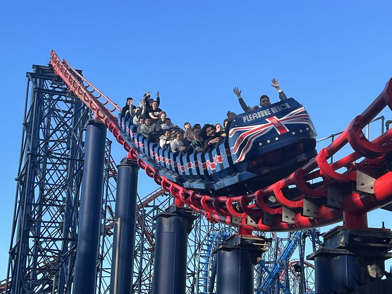
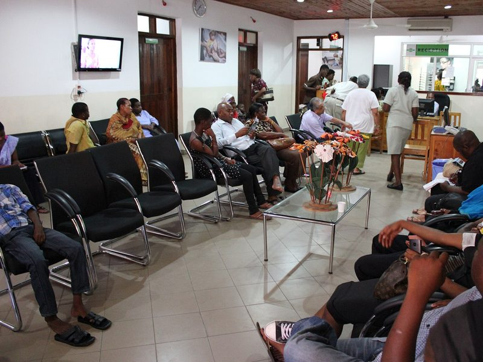
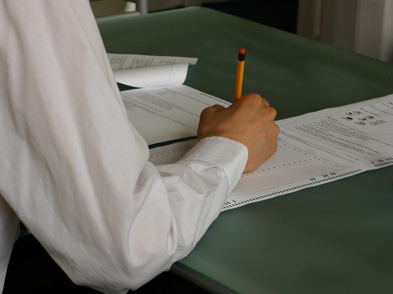
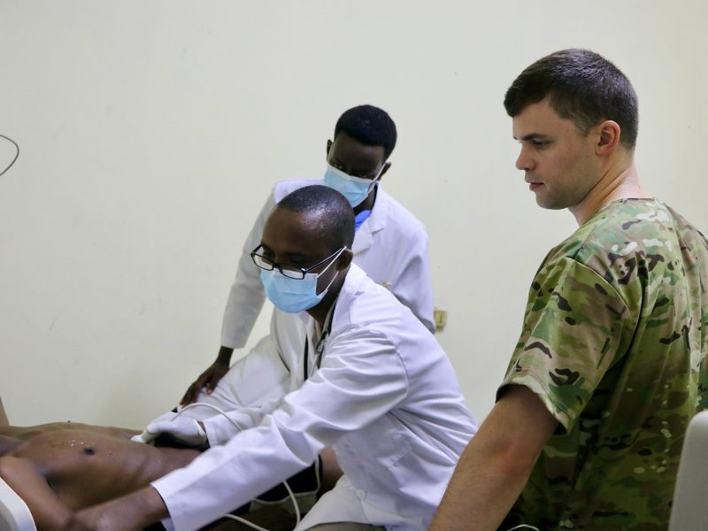
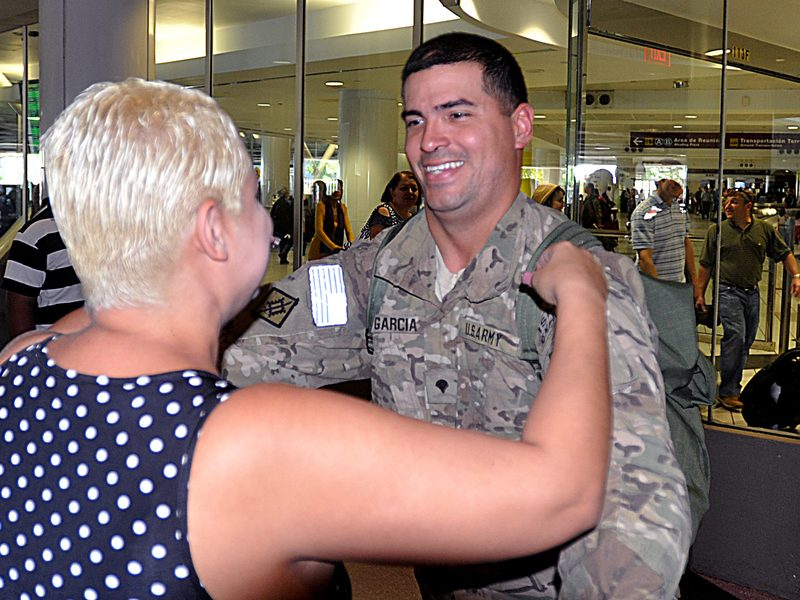

Name 50+ words and chunks for feelings, fear, stress and rewarding moments at work.
Explain when a story needs the past simple, the past continuous or the past perfect.
Recognise which adjectives go with very and which go with absolutely.
🛠️Apply · Analyse
Describe a frightening or a happy experience in the right order, with sequence words.
Use adverbs of degree correctly: very worried, absolutely delighted.
Find feelings, reasons and the order of events in VSTEP reading and listening.
💡Evaluate · Create
Give and defend an opinion on emotions at work with the 7-step frame.
Write an informal email (≥ 120 words) and a problem–solution essay (≥ 250 words).
Value your colleagues' feelings and your own wellbeing when work is hard.
Lead-in 1 · Mixed emotions — describe and react
3:00Choose two photos: what are the people feeling, and why? Then answer the questions.

On a roller coaster
Question 1
"How do these riders feel right now?"
Question 2
"Why do some people love being scared like this, while others hate it?"
Question 3
"Would you get on this ride? Why? / Why not?"
Graduation day
Question 1
"How do these graduates feel, and why?"
Question 2
"Which moments in a doctor's training make people feel this proud?"
Question 3
"How did you feel on the day you graduated from medical school?"

Waiting for news
Question 1
"Who might these people be waiting for, and how do they feel?"
Question 2
"What can doctors and nurses do for relatives who are waiting?"
Question 3
"Have you ever had to calm down an anxious relative? What did you say?"

Exam nerves
Question 1
"What is this person doing, and how might they be feeling?"
Question 2
"Why do exams make so many people nervous?"
Question 3
"What do you do to calm your nerves before an exam?"

At the bedside
Question 1
"What are the doctors doing, and how might the patient be feeling?"
Question 2
"How do doctors stay calm when a case is urgent or the diagnosis is unclear?"
Question 3
"Tell your partner about a case or a shift you will never forget."

Home at last
Question 1
"What has just happened, and how do these two people feel?"
Question 2
"Why are moments like this so emotional for military families?"
Question 3
"When did you last feel really relieved? What happened?"
Lead-in 2 · Agree or disagree?
4:00Tap your view, then give one reason.
1 · Doctors should never cry in front of patients or their families.
Model answer
I partly disagree. When a patient I'd looked after for months passed away, I had tears in my eyes, and his wife told me later that it meant a lot to her. What matters is that you stay in control and can still do your job.
2 · A little stress before an exam actually helps you do better.
Model answer
I agree, up to a point. Before my residency exam, my nerves kept me focused and made me revise properly. Too much stress is a different story, though: the night before, I hardly slept at all.
3 · Night shifts in the emergency department are the best way to learn to keep calm.
Model answer
I agree. On my first night shifts I panicked over small things, but after a few months I'd seen so many emergencies that I learnt to keep my head. Real patients at three in the morning teach you faster than any textbook.
4 · It's better to bottle up your feelings at work and deal with them at home.
Model answer
I don't agree at all. If you bottle everything up, it comes out later, and usually your family pays for it. A five-minute chat with a colleague after a hard case is much healthier.
5 · Being scared can be fun; that's why people love horror films and roller coasters.
Model answer
I'm not sure. My younger brother loves horror films, but I can't stand them. I see enough frightening things at work, so on my day off I'd rather watch a comedy.
6 · Hospitals should offer free counselling to doctors who are suffering from burnout.
Model answer
I completely agree. We spend all day looking after other people, but nobody really looks after us. If my hospital offered free counselling, I think plenty of my colleagues would use it, as long as it stayed confidential.
Useful language
I completely agree / I partly agree / I don't agree at all, because …
It depends on …
In my experience, …
That's true, but …
Lead-in 3 · How many words do you have for each of the 4 groups?
4:00Type every English word or phrase you know, separated by commas.
Four short messages (good news, a worried mother, a scare in a storm, a proud father); two young doctors remember their first night shift; a psychologist on exam and presentation nerves.
After the night shift, we were completely exhausted.
He felt utterly miserable after the exam.
04REALLY · WITH BOTH✅
USE
really works with gradable and ungradable adjectives
Very common in speaking; in essays prefer extremely or absolutely
Not absolutely happy, but really happy is fine
EXAMPLES
I was really worried. · I was really terrified.
The relatives were really grateful.
TRAPS
05QUITE · TWO MEANINGS🔀
USE
quite + gradable = fairly: quite tired
quite + ungradable = completely: quite right · quite impossible
EXAMPLES
I was quite nervous, but it went well. (fairly)
You're quite right: we should call the family. (completely)
It's quite impossible to sleep on a night shift. (completely)
06SPELLING✏️
USE
Adjective + ‑ly: keep the final e
absolutely · completely · extremely
total + ly = totally · utter + ly = utterly
EXAMPLES
Not absolutly, completly, extremly, totaly
4 · Grammar 4 · Open cloze — the grammar words (Exam folder 3)
OPEN CLOZE · THE GRAMMAR WORDSEleven kinds of small word that fill the gaps
BEFORE NOUNS
01QUANTIFIERS · DETERMINERS🔢
USE
Quantifiers: few · a few · little · a little · each · every · both · much · many
Determiners: a · an · the · this · those · some · any
EXAMPLES
A few patients asked for me by name. (some) · Few patients complain. (almost none)
Each resident has a mentor in the first year.
02PREPOSITIONS · COLLOCATIONS📌
USE
Fixed prepositions: according to · in spite of · because of · afraid of
Fixed partners: keep a promise · make a decision · take a risk
EXAMPLES
According to the nurse, he slept well.
I kept my promise and phoned his wife.
VERBS
03MODALS · VERB FORMS⚙️
USE
Modals: can · could · must · might · should · would
Forms and auxiliaries: be · been · being · have · having · had · do · did
EXAMPLES
Nobody could believe he had survived.
I have been on call since Friday.
Having finished my shift, I went straight to bed.
04PHRASAL-VERB PARTICLES🧩
USE
The small word that completes a phrasal verb: up · out · off · down · on
The meaning of the sentence tells you which one
EXAMPLES
She took up yoga to cope with stress.
The alarm went off at 3 a.m.
He finally calmed down after an hour.
LINKING IDEAS
05PRONOUNS · RELATIVE PRONOUNS👥
USE
Pronouns: it · they · himself · themselves · one
Relative pronouns: who · which · whose · where · that
EXAMPLES
He blamed himself for the delay.
The nurse whose calm voice helped me most has now retired.
06COMPARISON · LINKERS⚖️
USE
Comparison: as … as · than · more · most · the … the
Linkers: unless · although · even though · however · despite
EXAMPLES
The second exam was not as hard as the first.
Although I was exhausted, I couldn't sleep.
You won't calm down unless you slow your breathing.
How to do an open cloze
Read the title and the whole text first, before you fill any gap.
Look on both sides of the gap: is a noun, a verb or a whole clause missing?
Check singular or plural, and the tense of the sentence.
Write one word per gap and spell it correctly; a contraction such as don't counts as two words, so it never fits.
5 · 10 functions · 30 chunks
1 · Describing how you felt
I felt really … when …
I was so … that …
It made me feel …
I felt really tense when the consultant called my name. I was so nervous that my voice shook, but presenting the case made me feel far more confident.
2 · Saying how strongly you feel
I was absolutely …
I'm a bit / fairly … about …
I'm not at all …
After the last paper, I was absolutely exhausted. I'm fairly confident about the results, though, and I'm not at all worried about the speaking.
3 · Setting the scene of a story
It all happened on …
It was … and …
I was …‑ing when …
It all happened on my second night shift. It was after midnight and the ward was quiet. I was writing up my notes when a nurse ran in.
4 · Sequencing events
At first, … Then … After that, …
As soon as …, …
Eventually, … · In the end, …
At first, I froze. Then I remembered the protocol. As soon as the senior nurse arrived, we started CPR, and in the end his heart started again.
5 · Reacting to news
Congratulations on …!
That's fantastic news!
I was so sorry to hear about …
Congratulations on passing your membership exam! That's fantastic news! And I was so sorry to hear about your grandfather.
6 · Reassuring someone
Don't worry: …
It's perfectly normal to feel …
I'm sure you'll be fine.
Don't worry: everyone forgets something on their first night. It's perfectly normal to feel nervous, and I'm sure you'll be fine.
7 · Advice on coping with nerves (email)
What helped me most was …
Try not to …
The best thing to do is …
What helped me most was writing a checklist before each shift. Try not to drink too much coffee, and if you're unsure, the best thing to do is ask a senior straight away.
8 · Looking back
It was the first time I had ever …
I've never … since.
Looking back, I realise …
It was the first time I had ever lost a patient. Looking back, I realise we did everything we could, but I've never taken a quiet night shift for granted since.
9 · Explaining causes (essay)
One of the main causes of … is …
This is largely due to …
…, which leads to …
One of the main causes of burnout is the heavy workload. This is largely due to staff shortages, which leads to longer shifts and fewer breaks.
10 · Suggesting solutions and concluding (essay)
One way to tackle this is to …
… would go a long way towards …
To sum up, …
One way to tackle this is to limit night shifts to three a week. Regular debriefs would go a long way towards reducing stress. To sum up, hospitals and colleagues both have a part to play.
6 · Upgrade your sentences: B2 → B2+
B2
B2+
I was very happy when I passed.
I was absolutely delighted, in fact over the moon, when I found out I'd passed.
I was very afraid.
I was scared stiff: my hands were trembling and I could hardly breathe.
I was very tired after the night shift.
I was completely exhausted after the night shift and fell fast asleep on the bus.
When I arrived, the patient went home.
By the time I arrived, the patient had already been discharged.
I waited a long time, then the doctor came.
I had been waiting for over two hours by the time the doctor came.
I hadn't done this before.
It was the first time I had ever broken bad news to a family on my own.
I cried after the shift.
I managed to keep calm on the ward, but later I broke down in tears in the staff room.
My work is very stressful.
I'm under a lot of pressure at work, and I sometimes worry about burnout.
I told the relative it was OK.
I reassured the anxious relative that her father was stable.
I didn't show my feelings.
I put on a brave face, but inside I was bitterly disappointed.
It was a very good moment.
Seeing him walk out of the ward gave me a real sense of achievement.
I walked home and I saw an accident. I was scared.
I was cycling back to the dorm when a motorbike skidded right in front of me. It was a near miss, and my heart was pounding for ages.
7 · The answer frame — 7 steps
Sample question: "Should doctors show their emotions in front of patients?"
1Point
Jobanswer the question directly
Ask yourselfWhat is my answer?
I think they can show some emotion, as long as they keep it in check.
2Why
Jobgive your main reason
Ask yourselfWhy do I think so?
Patients trust a doctor who seems human, not a machine.
3How
Jobexplain how that reason works in real life
Ask yourselfHow does it happen?
A few words like 'I'm so sorry, this must be very hard' show empathy, and the patient feels that someone is really listening.
4Example
Jobshow one real case: who, where, when
Ask yourselfWho or what proves it?
When I told a family on our cardiology ward that their grandfather had died, I lowered my voice and sat with them in silence for a minute.
5Result
Jobsay what happened in that case
Ask yourselfWhat changed?
Afterwards, his daughter thanked me for being kind, even though the news was terrible.
6Limitation
Jobadmit the other side or a problem
Ask yourselfWhat is the weak point?
Admittedly, if a doctor bursts into tears or panics, the family loses confidence and feels even more frightened.
7Evaluation
Jobgive your final view in new words
Ask yourselfSo what do I think now?
So a little warmth helps, provided the doctor stays calm enough to explain what happens next.
Where to use it
Part 1: three steps, Point → Why → Example, in about 30 seconds.
Part 2: all 7 steps in 3 minutes: Why + How for box 1, Example + Result for box 2, box 3 in the Result or the Limitation, then your own idea in the Evaluation.
Part 3: all 7 steps in about a minute, one short sentence per step.
Exercise 19 (choosing 1 of 3 ways to help young doctors cope with stress): all 7 steps; the Limitation explains why the other two options are weaker.
Essay: each body paragraph = Point → Why → How → Example → Result; Limitation + Evaluation go in the last body paragraph and the conclusion.
8 · 12 common mistakes
Mistake
Correction
Remember
I was very delighted with my results.
I was absolutely delighted with my results.
delighted is already extreme: use absolutely or really, not very.
After the exam I was absolutely happy.
After the exam I was really / extremely happy.
happy is gradable: very, extremely, really, not absolutely.
I was absolutly exhausted.
I was absolutely exhausted.
Keep the final e: absolutely, completely, extremely; total + ly = totally.
I was knowing that something was wrong.
I knew that something was wrong.
know is a state verb: past simple, even for a situation in progress.
When I arrived at the station, the train left.
When I arrived at the station, the train had left.
It left first, so it was gone when you arrived → past perfect.
I have seen him yesterday in the canteen.
I saw him yesterday in the canteen.
A finished time (yesterday, last week) → past simple, not present perfect.
I examined the patient when his phone rang.
I was examining the patient when his phone rang.
The action in progress → past continuous; the short action that interrupts it → past simple.
I'm scared of fly.
I'm scared of flying.
After a preposition (of, about, at) use the ‑ing form.
The interview was very embarrassed.
The interview was very embarrassing.
‑ing = what causes the feeling; ‑ed = how the person feels.
The lecture was so long that I was boring.
The lecture was so long that I was bored.
‑ed describes your feeling. I was boring means other people found you dull.
My mother was worried for my exam.
My mother was worried about my exam.
worried about + a thing or a person; worried for + a person = afraid that something bad will happen to them.
Check marks your answers. Show answers gives the key and a short reason.
0 exercises checked
1 · Reading A · Bad news, gently
Read for the main idea first, then find the key words of each question in the text.
Passage | Questions
Bad news, gently
1Every doctor remembers the first time they had to give bad news. Dr Mai, a junior doctor in internal medicine in Hà Nội, still remembers hers. “The first time, I talked too much,” she says. “I was so nervous that I filled every silence with medical terms, and I hardly looked at the patient.”Q2
2Conversations like this are among the hardest parts of medicine. Doctors are trained to diagnose and treat, yet many feel anxious or uneasy when the news is bad, and some even feel guilty, as if it were their fault. Patients and families, meanwhile, often remember for years how the news was given: the room, the words, whether the doctor sat down.Q3 A clumsy talk can leave them feeling abandoned, even when the treatment was excellent.
3In 2000, a team of doctors led by Walter Baile and Robert Buckman published a six-step guide in the journal The Oncologist. Known as SPIKES, it was designed with cancer patients in mind, but it is now taught in many medical schools.Q4 The first step, Setting up, is practical: a private room, a chair for the doctor and no interruptions. Next comes Perception: before giving any news, the doctor asks what the patient already knows.Q6 The third step, Invitation, means finding out how much the patient wants to hear: some want every detail, while others prefer the main points and ask a relative to listen on their behalf.Q5
4Only then does the doctor move on to Knowledge. A warning shot, such as “I'm afraid the results are not as good as we had hoped”, gives the patient a moment to prepare.Q7 Then come the facts, in small chunks and plain words. The fifth step, Emotions, means responding with empathy: name the feeling (“I can see this is a terrible shock”) and allow silence. For many doctors this is the hardest step, because every instinct tells them to fill the silence with more facts.Q8
5The last step, Strategy and Summary, turns to the future: the next tests, the treatment plan and the next appointment. SPIKES is not a script to learn by heart; it works more like a map, reminding an anxious doctor where the conversation needs to go.Q9
6And Dr Mai? After a communication course, she now sits down, says less and listens far more. “The news is still sad,” she says, “but the patient doesn't have to hear it alone.” Bad news can never be made good, but it can be given gently, and patients remember the difference.Q1,Q10
1What is the passage mainly about?
1What is the passage mainly about?
Paragraph 1 shows a first conversation that went badly, paragraphs 2–5 explain why these talks are hard and how the six SPIKES steps help, and the text ends: “Bad news can never be made good, but it can be given gently.”Clue: Main idea: read the first lines of paragraphs 2–5 and the last sentence of the text.
In the text:Bad news can never be made good, but it can be given gently, and patients remember the difference.
2What went wrong the first time Dr Mai gave bad news?
2What went wrong the first time Dr Mai gave bad news?
“The first time, I talked too much … I filled every silence with medical terms.” She gave the news face to face and did it herself; nothing is said about tears.Clue: Paragraph 1: Dr Mai's own words about “the first time”.
In the text:“The first time, I talked too much,” she says. “I was so nervous that I filled every silence with medical terms, and I hardly looked at the patient.”
3According to paragraph 2, what do families often remember for years?
3According to paragraph 2, what do families often remember for years?
Families “often remember for years how the news was given: the room, the words, whether the doctor sat down.” Test results, costs and the ward the patient stayed on are not mentioned.Clue: Paragraph 2: “Patients and families … often remember for years …”.
In the text:Patients and families, meanwhile, often remember for years how the news was given: the room, the words, whether the doctor sat down.
4What is true about SPIKES, according to paragraph 3?
4What is true about SPIKES, according to paragraph 3?
“it was designed with cancer patients in mind, but it is now taught in many medical schools.” It was published in a medical journal (The Oncologist) by doctors, not patients, and it is not limited to emergency departments.Clue: Paragraph 3: “Known as SPIKES, it was designed …”.
In the text:Known as SPIKES, it was designed with cancer patients in mind, but it is now taught in many medical schools.
5The word their in paragraph 3 refers to
5The word their in paragraph 3 refers to
“others prefer the main points and ask a relative to listen on their behalf.” The relative listens for them, so their = the patients who prefer the main points.Clue: Reference: who wants a relative to listen “on their behalf”?
In the text:others prefer the main points and ask a relative to listen on their behalf.
6In the Perception step, what should the doctor do?
6In the Perception step, what should the doctor do?
“Next comes Perception: before giving any news, the doctor asks what the patient already knows.” A private room is Setting up, small chunks are Knowledge, and planning is the last step.Clue: Paragraph 3: find the word Perception and read the rest of the sentence.
In the text:Next comes Perception: before giving any news, the doctor asks what the patient already knows.
7The phrase warning shot in paragraph 4 is closest in meaning to
7The phrase warning shot in paragraph 4 is closest in meaning to
The example “I'm afraid the results are not as good as we had hoped” “gives the patient a moment to prepare.” A warning shot is a short sentence that gets someone ready for bad news; it has nothing to do with noise.Clue: Vocabulary in context: what does the example sentence do before the news comes?
In the text:A warning shot, such as “I'm afraid the results are not as good as we had hoped”, gives the patient a moment to prepare.
8What can be inferred about the Emotions step?
8What can be inferred about the Emotions step?
Many doctors find this step the hardest “because every instinct tells them to fill the silence with more facts.” So doctors naturally want to keep talking, just as Dr Mai did.Clue: Inference: “every instinct tells them to fill the silence …”.
In the text:For many doctors this is the hardest step, because every instinct tells them to fill the silence with more facts.
9Why does the writer compare SPIKES to a map?
9Why does the writer compare SPIKES to a map?
“SPIKES is not a script to learn by heart; it works more like a map, reminding an anxious doctor where the conversation needs to go.” A map shows the way but does not tell you the exact words to say.Clue: Purpose: “not a script to learn by heart … more like a map”.
In the text:SPIKES is not a script to learn by heart; it works more like a map, reminding an anxious doctor where the conversation needs to go.
10What does the writer believe about giving bad news?
10What does the writer believe about giving bad news?
“Bad news can never be made good, but it can be given gently, and patients remember the difference.” The writer believes the way the news is given matters a great deal, and paragraph 6 shows that training helped Dr Mai.Clue: Writer's attitude: the last sentence of the text.
In the text:Bad news can never be made good, but it can be given gently, and patients remember the difference.
2 · Reading B · Why do we enjoy being scared?
Passage | Questions
Why do we enjoy being scared?
1Every weekend, people pay good money to be frightened. They queue for roller coasters, watch horror films and walk through haunted houses, screaming all the way. At first sight this makes little sense. Fear developed to keep us alive, so why would anyone choose to feel it? Scientists who study “recreational fear” believe they now have part of the answer.Q1
2The first clue lies in the body. When we are frightened, our heart pounds, we breathe faster and adrenaline floods the blood, whether the danger is real or not.Q2 The difference lies in the brain. In a cinema or on a ride, part of the brain knows perfectly well that we are safe, and that we can stop at any moment simply by closing our eyes. With that sense of control, terror turns into a thrill.Q3
3Researchers at the Recreational Fear Lab at Aarhus University in Denmark tested this in a haunted house attraction. Visitors wore heart-rate monitors and later described how scared they had felt and how much they had enjoyed it. The results, published in 2020 in Psychological Science, showed that enjoyment was highest at a moderate level of fear, a sweet spot.Q4,Q5Visitors who were hardly scared at all enjoyed it less, and so did those who were absolutely terrified.Q4,Q5
4Safe fear may even be good for us. A 2021 study led by psychologist Coltan Scrivner, working with the same Aarhus team, looked at people's mental health during the first months of the COVID-19 pandemic. Horror fans reported less psychological distress than others.Q7 The researchers suggest that horror lets viewers practise dealing with fear in a safe setting, so when a real crisis came, they had already rehearsed some of the feelings.Q6However, the study shows a link, not a cause: it may simply be that calmer, more resilient people enjoy horror in the first place.Q8
5Not everyone enjoys being scared. Some people find horror films utterly unbearable, and others are petrified of roller coasters. The sweet spot is different for each of us: a film that one viewer finds mildly exciting can leave another wide awake and shaking all night.Q9
6Many emergency doctors admit they enjoy the adrenaline of a busy night shift, though in their case the danger is real, at least for the patient. This is one reason why simulation training matters: a young doctor who has already felt their heart pounding in a safe setting may be less likely to freeze when it happens for real.Q10 So the next time you scream on a roller coaster, don't feel embarrassed. You may simply be practising.
1What is the passage mainly about?
1What is the passage mainly about?
Paragraph 1 asks why anyone would choose to feel fear and says scientists “think they now have part of the answer”; the rest of the text explains the body, the brain, two studies and a link to doctors.Clue: Main idea: the end of paragraph 1 says what the text will explain.
In the text:Scientists who study “recreational fear” believe they now have part of the answer.
2According to paragraph 2, what is the same in real and imagined danger?
2According to paragraph 2, what is the same in real and imagined danger?
A pounding heart, faster breathing and adrenaline come “whether the danger is real or not.” The sense of control is what is different.Clue: Paragraph 2: the first two sentences.
In the text:When we are frightened, our heart pounds, we breathe faster and adrenaline floods the blood, whether the danger is real or not.
3Why can fear feel like a thrill in a cinema or on a ride?
3Why can fear feel like a thrill in a cinema or on a ride?
“part of the brain knows perfectly well that we are safe, and that we can stop at any moment … With that sense of control, terror turns into a thrill.” In other words, we know we can quit when we like. Paying for the ride and other people screaming are mentioned in paragraph 1, but neither explains why terror turns into a thrill.Clue: Paragraph 2: “The difference lies in the brain.”
In the text:In a cinema or on a ride, part of the brain knows perfectly well that we are safe, and that we can stop at any moment simply by closing our eyes. With that sense of control, terror turns into a thrill.
4What did the Aarhus haunted house study find?
4What did the Aarhus haunted house study find?
“enjoyment was highest at a moderate level of fear”; visitors who were hardly scared enjoyed it less, and so did those who were absolutely terrified. So being terrified made the visit less enjoyable.Clue: Paragraph 3: “The results … showed that …”.
In the text:The results, published in 2020 in Psychological Science, showed that enjoyment was highest at a moderate level of fear, a sweet spot.Visitors who were hardly scared at all enjoyed it less, and so did those who were absolutely terrified.
5The phrase sweet spot in paragraph 3 is closest in meaning to
5The phrase sweet spot in paragraph 3 is closest in meaning to
Visitors who were hardly scared and those who were terrified both enjoyed it less: too little fear is dull, too much is unpleasant. So the sweet spot is the level in between where enjoyment is highest: the point that gives people the greatest pleasure.Clue: Vocabulary in context: the next sentence explains the phrase.
In the text:The results, published in 2020 in Psychological Science, showed that enjoyment was highest at a moderate level of fear, a sweet spot.Visitors who were hardly scared at all enjoyed it less, and so did those who were absolutely terrified.
6The word they in paragraph 4 refers to
6The word they in paragraph 4 refers to
The sentence is about people who watch horror: “horror lets viewers practise … when a real crisis came, they had already rehearsed some of the feelings.” They = the horror fans.Clue: Reference: who “had already rehearsed some of the feelings”?
In the text:so when a real crisis came, they had already rehearsed some of the feelings.
7What did the 2021 study find about horror fans?
7What did the 2021 study find about horror fans?
“Horror fans reported less psychological distress than others” during “the first months of the COVID-19 pandemic.” Nothing is said about how many films they watched or when they became fans.Clue: Paragraph 4: “Horror fans reported …”.
In the text:Horror fans reported less psychological distress than others.
8What does the writer suggest about the 2021 study?
8What does the writer suggest about the 2021 study?
“the study shows a link, not a cause: it may simply be that calmer, more resilient people enjoy horror in the first place.” The study shows a link, not a cause, so it cannot show that horror itself helped. The writer does not say the results are wrong or the study is too small.Clue: Writer's view: the sentence that begins “However”.
In the text:However, the study shows a link, not a cause: it may simply be that calmer, more resilient people enjoy horror in the first place.
9What can be inferred from paragraph 5?
9What can be inferred from paragraph 5?
“a film that one viewer finds mildly exciting can leave another wide awake and shaking all night.” Only “some people” are petrified of roller coasters, not most.Clue: Inference: “The sweet spot is different for each of us”.
In the text:The sweet spot is different for each of us: a film that one viewer finds mildly exciting can leave another wide awake and shaking all night.
10Why does the writer mention simulation training?
10Why does the writer mention simulation training?
“a young doctor who has already felt their heart pounding in a safe setting may be less likely to freeze when it happens for real.” The writer uses safe fear to explain why simulation training is useful.Clue: Purpose: what does a safe setting give a young doctor?
In the text:This is one reason why simulation training matters: a young doctor who has already felt their heart pounding in a safe setting may be less likely to freeze when it happens for real.
3 · After reading · Talk about it
Answer with the 7-step frame: Point → Why → How → Example → Result → Limitation → Evaluation.
1 · How should a doctor break bad news to a patient's family?
Model answer
PointIn my view, a doctor should break bad news slowly, in a quiet room, and never in the corridor. WhyA distressed relative can only take in a little information at a time, especially after a shock. HowSo I'd start with a warning shot, give the facts in small chunks and show empathy by naming the feeling and allowing some silence. ExampleLast year, for example, an elderly patient on my ward died during the night, and I had to tell his daughter when she arrived at six. I sat down with her in the nurses' office and just said, “I'm afraid I have some sad news.” ResultShe burst into tears, but a week later she thanked me for not rushing her. LimitationAdmittedly, on a busy shift there isn't always a private room or twenty spare minutes. EvaluationEven so, five calm minutes are better than a hurried conversation the family will remember for the rest of their lives.
2 · Why do you think some people enjoy horror films or roller coasters?
Model answer
PointI think people enjoy them because they get the excitement of fear without any real danger. WhyYour heart is pounding and you're full of adrenaline, but part of your brain knows you're perfectly safe. HowThat sense of control turns being scared stiff into something you can laugh about a minute later. ExampleWhen I went to Sun World in Đà Nẵng with my classmates, for instance, I screamed all the way down the biggest ride, and then I queued up to do it again. ResultWe talked about it for the rest of the trip, and I felt absolutely thrilled, not frightened. LimitationAdmittedly, it doesn't work for everyone. My sister is petrified of heights and stayed on the ground the whole day. EvaluationOn balance, though, I'd say safe fear is a harmless way to let off steam, as long as nobody is forced into it.
3 · Should medical schools teach communication skills such as SPIKES?
Model answer
PointYes, I strongly believe they should, and not just as a one-hour lecture. WhyMost of us were trained to diagnose and treat, but nobody showed us what to say when the treatment had failed. HowStudents could practise with actors playing patients, using the six steps and getting feedback on their words and their silences. ExampleIn my first year as a resident, for example, I had to tell a man his biopsy result, and I was so nervous that I read it straight from the report. ResultHe looked utterly confused, and a senior colleague had to explain everything again in plain words. LimitationAdmittedly, a role-play can never feel quite as real as a distressed relative in front of you. EvaluationAll in all, though, a little practice in a safe setting is far better than learning the hard way at a patient's bedside.
4 · Can a little fear be good for us? Give an example from your own life.
Model answer
PointI'd say a little fear is useful, because it makes you prepare properly. WhyWhen you're slightly on edge, you concentrate harder and don't take anything for granted. HowThe trick is to keep calm enough to think, rather than trying to feel nothing at all. ExampleBefore I presented my first case at the hospital's morning meeting, for example, I was extremely anxious, so I practised it out loud every evening in the HVQY dorm. ResultOn the day, my hands were shaking a bit, but I answered every question, and my supervisor said it was the clearest case presentation that week. LimitationAdmittedly, too much fear does the opposite. A friend of mine went to pieces in her residency exam after three nights without sleep. EvaluationOverall, then, fear is helpful in small doses, as long as it pushes you to prepare and not to panic.
Sheet 6 / 11 · VSTEP Listening format · 3 parts · 13 questions · Mixed emotions
Listening
Press Check to see your score, then Show answers for the transcript and the key.
0 exercises checked
Part 1 · Short messages — how do they feel?
Audio + transcript | Questions
1Played 0×
The transcript appears after you press Show answers.
Transcript
Hello, Dr Quan, it's Hanh, the nurse on Ward 6. It's about Mr Binh in bed twelve. His scan results came back about ten minutes ago, and they're completely clear.Q1 He'd been anxious all week, and yesterday he was quite annoyed about how long it was all taking. But when I told him just now, he sat back, closed his eyes and said, ‘Thank goodness for that.’Q1 Could you pop in and see him after the ward round? Thanks.
2Played 0×
The transcript appears after you press Show answers.
Transcript
Tung, it's Mum. It's seven in the morning, and your bed hasn't been slept in. I was worried sick all night. I rang your friends, and nobody answered. Then your cousin told me you'd stayed at Long's flat because you'd missed the last bus. Well, I'm not cross about the bus. What annoys me is that you didn't send a single text. One message, that's all it would have taken.Q2 And don't forget your anatomy exam on Friday. Ring me.
3Played 0×
The transcript appears after you press Show answers.
Transcript
Hi, I'm calling about tonight's topic, scary nights. Last month there was a huge thunderstorm, and the power went off in my flat. I'm on the ninth floor, the lift had stopped, and I was alone. The dark didn't bother me, and I quite like thunder. But then I heard this scratching noise in the kitchen, and that really scared me.Q3 My heart was pounding. I crept in with a torch, and it was my neighbour's cat, hiding from the rain!
4Played 0×
The transcript appears after you press Show answers.
Transcript
Linh, it's Dad. Your mum's just shown me the email. You've been offered a place at the Military Medical University! I'm so proud of you.Q4 I can hardly speak. I know you were disappointed when you didn't win the chemistry prize, and when that magazine didn't publish your article. But this is what you really wanted, and you did it on your own. We'll celebrate properly at the weekend. Call me when you've finished class, OK?
1How does Mr Binh feel now?
1How does Mr Binh feel now?
The scan results “are completely clear” and he said “Thank goodness for that.” He was anxious all week and annoyed (impatient) yesterday about the wait, but now he is relieved.Clue: How did he react “just now”? Yesterday and all week are the past.
In the text:His scan results came back about ten minutes ago, and they're completely clear.But when I told him just now, he sat back, closed his eyes and said, ‘Thank goodness for that.’
2Why is Tung's mother annoyed?
2Why is Tung's mother annoyed?
“What annoys me is that you didn't send a single text.” She says she is not cross about the bus, the friends are only people she rang, and the exam is still on Friday.Clue: “I'm not cross about the bus. What annoys me is …”.
In the text:Well, I'm not cross about the bus. What annoys me is that you didn't send a single text. One message, that's all it would have taken.
3What frightened the caller most?
3What frightened the caller most?
“The dark didn't bother me, and I quite like thunder. But then I heard this scratching noise in the kitchen, and that really scared me.” The scratching noise came from the kitchen. The lift had stopped, but he does not say it frightened him.Clue: “that really scared me”.
In the text:The dark didn't bother me, and I quite like thunder. But then I heard this scratching noise in the kitchen, and that really scared me.
4Why is Linh's father proud of her?
4Why is Linh's father proud of her?
“You've been offered a place at the Military Medical University! I'm so proud of you.” She did not win the chemistry prize, and the magazine did not publish her article.Clue: “You've been offered a place at …”.
In the text:You've been offered a place at the Military Medical University! I'm so proud of you.
Part 2 · Conversation — our first night shift
Audio + transcript | Questions
Played 0×
The transcript appears after you press Show answers.
Transcript
LanMinh, do you remember our first night shift in the emergency department? I was thinking about it on the bus this morning.
MinhHow could I forget? You know, at first I was actually quite excited. I kept thinking, finally, real medicine!Q5 That lasted about an hour.
LanWhy, what happened?
MinhThere was an older man waiting for an X-ray, chatting to his wife, and he just collapsed in front of me. As soon as I saw him on the floor, I froze.Q6 I knew exactly what to do. I'd practised it a hundred times. But my hands wouldn't move.
LanOh, that's terrifying.
MinhIt was. Luckily, Hoa, the senior nurse, was right behind me. She pushed past, started chest compressions and shouted for the team.Q7 By the time the registrar arrived, the man was breathing again.
LanSo he was all right?
MinhHe was, in the end. I wasn't, though. I held it together until about four, then I went into the staff room and completely went to pieces. I couldn't stop shaking.
LanYou never told me that.
MinhI was too embarrassed. What about you? You looked so calm all night.
LanLooked is the right word. My worst moment came just before morning. A young man had died after a motorbike accident, and the consultant took me with him to talk to the family. At first I thought I'd only be watching, but then he asked me to explain what had happened in the ambulance. His mother burst into tears, and I just stopped. I'd prepared the medical facts, but not the silence.
MinhOh, Lan.
LanAnyway, what helped me was the debrief. Before we went home, Dr Phong sat the whole team down for twenty minutes and asked how we were feeling, not just what we'd done.
MinhSame for me. I didn't say a word in the meeting, but afterwards he found me in the corridor and told me that freezing the first time is completely normal. What matters is what you do the next time.
LanHonestly, I think every department should do that after a bad night.Q8
MinhAbsolutely. Talking it through makes the next one easier.Q8 Nobody teaches you that part at university.
LanHmm, I'm not sure anyone could. Some things you just have to live through.
MinhMaybe. But I'm glad I didn't have to live through it alone.
5How did Minh feel at the start of his first night shift?
5How did Minh feel at the start of his first night shift?
“at first I was actually quite excited … finally, real medicine!” He froze and later felt embarrassed, and it was Lan who looked calm.Clue: Signal: “at first”.
In the text:You know, at first I was actually quite excited. I kept thinking, finally, real medicine!
6What happened to Minh as soon as the man collapsed?
6What happened to Minh as soon as the man collapsed?
“As soon as I saw him on the floor, I froze … my hands wouldn't move.” The senior nurse started compressions and called the team; he only went off on his own at about four in the morning.Clue: Signal: “As soon as I saw him on the floor …”.
In the text:As soon as I saw him on the floor, I froze.
7Who first helped the man who collapsed?
7Who first helped the man who collapsed?
“Hoa, the senior nurse, was right behind me. She pushed past, started chest compressions and shouted for the team.” The registrar arrived only after that, and the consultant appears in Lan's story, not in Minh's.Clue: “Luckily, Hoa, the senior nurse …”.
In the text:Luckily, Hoa, the senior nurse, was right behind me. She pushed past, started chest compressions and shouted for the team.
8What do Lan and Minh agree about?
8What do Lan and Minh agree about?
Lan: “every department should do that after a bad night.” Minh: “Absolutely. Talking it through makes the next one easier.” Minh says “nobody teaches you that part at university”.Clue: Listen for agreement: “Absolutely.”
In the text:Honestly, I think every department should do that after a bad night.Absolutely. Talking it through makes the next one easier.
Part 3 · Talk — making nerves work for you
Audio + transcript | Questions
Played 0×
The transcript appears after you press Show answers.
Transcript
Good afternoon, everyone. I'm Helen Carter, and I'm a clinical psychologist. I've been asked to talk to you today about nerves: exam nerves, presentation nerves, that horrible feeling just before you stand up at your first conference.
Let me start with a confession. In my second year at university, I sat down for a statistics exam, turned over the paper, and my mind went completely blank. For about ten minutes, I couldn't remember a single formula.Q9 And I'd revised for weeks, so it wasn't a knowledge problem. It was a fear problem. I passed in the end, just about, but I've never forgotten that feeling.
So what's going on? Back in 1908, two American psychologists, Robert Yerkes and John Dodson, described an idea, first tested on mice, that's still useful today. A certain amount of stress actually improves performance. It makes you alert and focused. But beyond a certain point, more stress makes things worse.Q10 So the aim isn't to get rid of your nerves completely. If you feel nothing at all before an exam, that's not ideal either.
Now, what do most people do when their heart starts pounding? They tell themselves to calm down. The trouble is, that rarely works. In 2014, Alison Wood Brooks at Harvard tried something different. Before people gave a short speech or sang karaoke, some of them said out loud, ‘I am excited.’ Others tried to calm themselves down. And the excited group performed better. Why? Because anxiety and excitement feel almost the same in the body: a racing heart, a dry mouth, butterflies. It's much easier to give the feeling a new name than to switch it off.Q11
My second tool is your breath. When you're nervous, you breathe fast and shallow. So breathe in for a count of four, and out for a count of six. The out-breath should always be longer than the in-breath.Q12 That helps to slow your heart down. And please don't hold your breath, which is what most of us do without noticing.
Finally, the boring bits, which honestly matter most. Prepare properly: practise your presentation out loud, ideally in front of a friend. And sleep. I know, medical students and sleep! But a night without sleep before an exam is about the worst thing you can do for your memory.
Looking back, I wish someone had told me all this before that statistics exam. Nerves aren't a sign that you're going to fail. They're a sign that you care. So don't fight them. Use them.Q13
9What happened in Dr Carter's statistics exam?
9What happened in Dr Carter's statistics exam?
“For about ten minutes, I couldn't remember a single formula.” She had revised for weeks and passed in the end.Clue: “my mind went completely blank”.
In the text:my mind went completely blank. For about ten minutes, I couldn't remember a single formula.
10What does the Yerkes–Dodson idea say about stress?
10What does the Yerkes–Dodson idea say about stress?
“A certain amount of stress actually improves performance … But beyond a certain point, more stress makes things worse.” So some stress helps, but more is not always better.Clue: Listen for 1908 and “A certain amount of stress …”.
In the text:A certain amount of stress actually improves performance. It makes you alert and focused. But beyond a certain point, more stress makes things worse.
11Why does saying “I am excited” help, according to Dr Carter?
11Why does saying “I am excited” help, according to Dr Carter?
“anxiety and excitement feel almost the same in the body … It's much easier to give the feeling a new name than to switch it off.” She does not say it slows the heart; slow breathing does that.Clue: Signal: “Why? Because …”.
In the text:Why? Because anxiety and excitement feel almost the same in the body: a racing heart, a dry mouth, butterflies. It's much easier to give the feeling a new name than to switch it off.
12What breathing advice does Dr Carter give?
12What breathing advice does Dr Carter give?
“breathe in for a count of four, and out for a count of six. The out-breath should always be longer than the in-breath.” She asks people not to hold their breath.Clue: Listen for the two numbers, four and six.
In the text:So breathe in for a count of four, and out for a count of six. The out-breath should always be longer than the in-breath.
13What is Dr Carter's main message about nerves?
13What is Dr Carter's main message about nerves?
“Nerves aren't a sign that you're going to fail. They're a sign that you care. So don't fight them. Use them.” She also says the aim isn't to get rid of nerves completely.Clue: The last sentences of the talk give the message.
In the text:Nerves aren't a sign that you're going to fail. They're a sign that you care. So don't fight them. Use them.
Sheet 7 / 11 · VSTEP Speaking · 12 minutes
Speaking
Part 1 Social interaction 3' · Part 2 Topic development 5' · Part 3 Extended questions 4'.
In the model answers:
PointWhy … (coloured tags) = the steps of the answer frame: Point, Why, How, Example, Result, Limitation, Evaluation
frame language = phrases that give an opinion, a reason, an example, a contrast or a conclusion
unit vocabulary = words and chunks from Groups 1–4 of Sheet 3
What each step doesPointanswer the question directlyWhygive your main reasonHowexplain how that reason works in real lifeExampleshow one real case: who, where, whenResultsay what happened in that caseLimitationadmit the other side or a problemEvaluationgive your final view in new words
Part 1 · Social interaction (3') — 3 topics, 10 questions
0:30Answer = Point → Why → Example
Record practice — Part 1
Topic 1Let's talk about feelings and moods.
1 · How do you usually feel at the start of a working week?
PointTo be honest, on Monday mornings I usually feel …WhyThat's because …ExampleLast Monday, for example, I …, and by … I'd …
Model answer
PointTo be honest, I usually feel a bit tense on Monday mornings. WhyThat's because all the weekend admissions are waiting for us, and nobody knows how many there'll be. ExampleLast Monday, for example, I walked onto the ward and found eleven new patients. By ten o'clock, though, I'd seen most of them, and I felt fairly calm again.
2 · What kinds of things put you in a good mood?
PointSmall things, mostly. … can make me …WhyI think that's because …ExampleLast Sunday, for instance, …
Model answer
PointSmall things, mostly. A hot bowl of phở and a bit of sunshine can make me perfectly happy. WhyI think that's because my job is serious most of the time, so I notice the little pleasures more. ExampleLast Sunday, for instance, my sister and I had breakfast by West Lake before the crowds arrived. Nothing special happened, but I felt content for the rest of the day.
3 · What do you do when you feel stressed?
PointWhen I'm stressed, I usually …WhyIt's the quickest way for me to …ExampleDuring my …, for example, I … every evening.
Model answer
PointWhen I'm stressed, I usually go for a run or play badminton with people from my department. WhyIt's the quickest way for me to let off steam, and after half an hour I can think clearly again. ExampleDuring my residency exams, for example, I ran round the lake near the dorm every evening, even in the rain. I'm sure it helped me sleep.
4 · Do you find it easy to show your feelings?
PointNot really. I tend to …WhyI think it's partly …ExampleWhen …, for example, I … and I only … later.
Model answer
PointNot really. I tend to keep my emotions in check, especially at work. WhyI think it's partly my upbringing. My parents rarely talked about how they felt. ExampleWhen my grandfather died last year, for example, I put on a brave face at the funeral, and I only broke down in tears two weeks later, alone in the car.
Topic 2Let's talk about fear and nerves.
5 · What were you afraid of when you were a child?
PointWhen I was little, I was … of …WhyThat's because …ExampleFor years, for example, I …
Model answer
PointWhen I was little, I was scared stiff of dogs. WhyThat's because a neighbour's dog chased me down the lane when I was five, and I never forgot it. ExampleFor years, for example, I walked the long way to school just to avoid one house with a big black dog at the gate. Funnily enough, I'm fine with dogs now.
6 · Do you get nervous before exams or presentations?
PointYes, I get … , especially before …WhyThe main reason is that …ExampleBefore my …, for example, I hardly …, but once I started, …
Model answer
PointYes, I get very nervous, especially before big exams. WhyThe main reason is that one morning can decide the next few years of your career. ExampleBefore my residency entrance exam, for example, I hardly slept, and my hands were shaking so much that I could barely write my name. Once I started on the first question, though, I calmed down.
7 · Can you remember a time when you were really frightened?
PointYes, I had … about … years ago.WhyIt still frightens me because …ExampleI was riding home after … when …
Model answer
PointYes, I had a narrow escape on my motorbike about three years ago. WhyIt still frightens me because it happened so fast that I didn't have time to think. ExampleI was riding home after a night shift when a lorry pulled out of a side road. I braked hard and stopped about a metre from it. My heart was pounding, and I had to sit by the road for ten minutes before I could ride on.
Topic 3Let's talk about happy memories.
8 · What is one of the happiest days you can remember?
PointOne of the happiest days of my life was …WhyIt meant so much because …ExampleI remember, for example, …
Model answer
PointOne of the happiest days of my life was the day I graduated from medical school. WhyIt meant so much because my parents had worked incredibly hard to pay for my studies. ExampleI remember, for example, that my father, who hardly ever shows emotion, had tears in his eyes when he took my photo. I was absolutely delighted, and he was really proud.
9 · When did you last feel really proud of yourself?
PointThe last time was …, when …WhyIt made me proud because she'd …ExampleShe brought … and told … It was …
Model answer
PointThe last time was about a month ago, when a patient I'd looked after came back to say thank you. WhyIt made me proud because she'd been very ill when she arrived, and I'd spent a lot of nights worried about her. ExampleShe brought a bag of oranges from her garden and told the nurses I was the doctor who never gave up. It was a real moment of pride, and it lifted my spirits for the whole week.
10 · What's the best news you've had recently?
PointThe best news I've had this year was that …WhyI was so … because I'd …ExampleMy supervisor rang me while I was …, and I was so … that …
Model answer
PointThe best news I've had this year was that my research proposal was approved. WhyI was so relieved because I'd rewritten it three times and had started to think it would never pass. ExampleMy supervisor rang me while I was on the bus, and I was so thrilled that I nearly shouted out loud. Then I called my wife straight away.
Practise 1
Choose 2 questions and write your answers in 3 steps: Point → Why → Example
Part 2 · Topic development (5') — speak from the diagram
You will have a long turn to talk on the following topic. Use the ideas in the diagram and your own ideas.
Card ADoctors should not show their emotions in front of patients.
🩺💬Showing emotions
👩⚕️🧊Staying professional
🤝❤️Patients' trust
💡✏️Your own ideas
🛡️😓Protecting yourself from stress
PointMy topic is whether … I only partly agree. … I'll talk about …, … and …, and then add an idea of my own.WhyFirst of all, patients need us to … A frightened patient …HowIf the doctor looks …, the patient …, so we learn to …ExampleThe second point is trust. Last year, for example, I had to …ResultA week later, she told …LimitationAdmittedly, feelings have a cost. If we …, we go home …EvaluationMy own idea is that it's all about timing. You can … and … later. So, all in all, …
Model answer — Card A (≈ 250 words, 2–3 minutes)
PointMy topic is whether doctors should hide their emotions from patients. I only partly agree. A doctor shouldn't go to pieces, but we shouldn't behave like robots either. I'll talk about staying professional, patients' trust and stress, and then add an idea of my own. WhyFirst of all, patients need us to stay professional. A frightened patient watches the doctor's face to work out how serious things are. HowIf the doctor looks anxious, the patient panics too, so we learn to keep calm and speak slowly, even when we're under a lot of pressure. ExampleThe second point is trust, and here a little emotion actually helps. Last year, for example, I had to break bad news to a woman whose husband had a brain tumour. I didn't cry, but I sat down, I let her cry, and I told her I was terribly sorry. ResultA week later she told a nurse I was the only doctor who'd treated her like a person, and after that she trusted every decision we made. LimitationAdmittedly, feelings have a cost. If we feel every patient's pain, we go home completely exhausted, and doctors who never switch off are the first to suffer from burnout. Some professional distance protects us. EvaluationMy own idea is that it's all about timing. You can show empathy in the room and let off steam later, with a colleague or at the gym. So, all in all, doctors needn't hide their feelings completely; they just need to choose the moment.
3 boxes + your own ideas · 7 steps
Look again
I only partly agree. A doctor shouldn't go to pieces, but we shouldn't behave like robots either. — a clear, balanced position before you map the diagram
If the doctor looks anxious, the patient panics too, so we learn to keep calm … — the How step: what happens in the room, cause then effect
Last year, for example, I had to break bad news to a woman whose husband had a brain tumour. — a real case with a time, a person and a detail
A week later she told a nurse … — the Result says what changed because of what you did
Admittedly, feelings have a cost. … Some professional distance protects us. — box 3 becomes the other side, then your own idea answers it
Card BFacing your fears makes you a stronger person.
😨💪Facing your fears
🙂📈Building confidence
📉📚Learning from bad experiences
💡✏️Your own ideas
🚪✨New opportunities
PointI'm going to talk about … I strongly believe …, as long as … I'll cover …, … and …, and then …WhyLet's start with confidence. Every time you …HowThe fear doesn't disappear overnight, but each time you face it, …ExampleMy second point is learning from bad experiences, like my own fear of … Three years ago, …ResultAs a result, … That's the third box: …LimitationAdmittedly, someone with … can feel worse if …EvaluationMy own idea is to … On balance, though, …
Model answer — Card B (≈ 230 words, 2–3 minutes)
PointI'm going to talk about facing your fears. I strongly believe it makes you stronger, as long as you go at the right speed. I'll cover building confidence, learning from bad experiences and new opportunities, then add my own idea. WhyLet's start with confidence. Every time you survive something you're terrified of, you prove you can cope. HowThe fear doesn't disappear overnight, but each time you face it, your heart beats a little slower, until one day it's only a bit uncomfortable. ExampleMy second point is learning from bad experiences, like my own fear of speaking English in public. Three years ago, at a conference in Hà Nội, I froze halfway through my talk because I'd forgotten a word I'd practised a hundred times. My heart sank as the silence went on. Instead of giving up, I joined an English club. ResultAs a result, last spring I presented our department's audit at a national conference in Huế and answered every question in English. That's the third box: new opportunities often sit just behind the thing that frightens you. LimitationAdmittedly, someone with a real phobia or regular panic attacks can feel worse if pushed too fast. EvaluationMy own idea is to do it in small steps, with support from a friend or, if necessary, a counsellor. On balance, though, the fears we face make us stronger; the ones we avoid only grow.
3 boxes + your own ideas · 7 steps
Look again
I strongly believe it makes you stronger, as long as you go at the right speed. — a clear position with one condition
each time you face it, your heart beats a little slower, until one day it's only a bit uncomfortable — the How step explains how confidence actually grows
Three years ago, … I froze halfway through my talk because I'd forgotten a word I'd practised a hundred times. — past simple for the events, past perfect for what happened before them
That's the third box: new opportunities … — the Result links your story to the last prompt, so all three boxes are covered
Admittedly, … My own idea is to … On balance, though, … — accept the risk, offer a safer way, then give your final view
Practise 2
Choose Card A or B: plan the 7 steps, then start the timer and speak for 3 minutes
Part 3 · Extended questions (4') — 10 questions, about 1 minute each
The examiner asks follow-up questions on the topic of Part 2:
Topic 4After Card A · emotions and stress at work
1 · Why do doctors and nurses often find it hard to talk about stress?
PointI think it's mainly because …WhyIn medicine, we're trained to …HowSo when you're struggling, you …ExampleA friend of mine in …, for example, didn't … until …ResultOnly then did …LimitationTo be fair, things are …EvaluationEven so, the old idea that … is still …
Model answer
PointI think it's mainly because they're afraid of looking weak. WhyIn medicine, we're trained to be the strong ones who look after everybody else. HowSo when you're struggling, you bottle up your feelings and tell yourself that a good doctor just copes. ExampleA friend of mine in surgery, for example, didn't tell anyone she was sleeping three hours a night until she fainted in the changing room. ResultOnly then did her head of department give her a week off. LimitationTo be fair, things are slowly changing, and younger staff talk about stress more openly. EvaluationEven so, the old idea that stress is a private problem is still very strong in most hospitals.
2 · Should hospitals offer counselling to their staff?
PointYes, I strongly believe …WhyDoctors and nurses see things …HowA trained counsellor gives you …, so …ExampleAfter a … last year, for instance, our hospital …ResultSeveral nurses told me later that …LimitationAdmittedly, many staff won't go, because …EvaluationSo counselling should be …
Model answer
PointYes, I strongly believe they should. WhyDoctors and nurses see things most people never see, like a child dying or a family falling apart. HowA trained counsellor gives you a safe place to talk things through, so the memory doesn't follow you home every night. ExampleAfter a serious coach crash last year, for instance, our hospital asked a psychologist to meet the emergency team. ResultSeveral nurses told me later that one hour with her helped more than a week off. LimitationAdmittedly, many staff won't go, because they worry their colleagues will find out. EvaluationSo counselling should be free, confidential and easy to book, ideally outside the hospital building.
3 · Is it ever right for a doctor to cry in front of a patient's family?
PointI'd say yes, now and then, as long as …WhyA few tears show the family that …HowThey don't change …, but they change …ExampleWhen a young patient of ours …, for example, …ResultThe mother …, and …LimitationOn the other hand, a doctor who … can't …EvaluationSo a moment of emotion is human, but …
Model answer
PointI'd say yes, now and then, as long as it's brief. WhyA few tears show the family that their loss matters to you as well. HowThey don't change the medical facts, but they change how the family remembers that moment for years. ExampleWhen a young patient of ours died of leukaemia, for example, our consultant's eyes filled with tears while she was talking to the parents. ResultThe mother hugged her, and the family still sends the ward a card every Tết. LimitationOn the other hand, a doctor who breaks down in tears can't answer questions or explain what happens next. EvaluationSo a moment of emotion is human, but the family still needs you to stay in control.
4 · What is the best way to deal with an angry patient or relative?
PointThe best way is to … first and … later.WhyMost angry relatives are …HowIf you let them …, their voice …, and then …ExampleLast month, for example, a man … because …ResultI let him finish, … and that was enough to …LimitationAdmittedly, this doesn't work if …EvaluationIn most cases, though, …
Model answer
PointThe best way is to listen first and explain later. WhyMost angry relatives are really frightened, not rude. HowIf you let them speak without interrupting, their voice usually drops after a minute or two, and then they can actually hear you. ExampleLast month, for example, a man shouted at me in the corridor because his mother had waited four hours for a bed. ResultI let him finish, apologised for the wait and explained the plan, and that was enough to calm him down. LimitationAdmittedly, this doesn't work if someone turns violent, and then you need security straight away. EvaluationIn most cases, though, calm listening does more than any rule or warning sign on the wall.
5 · Are young doctors today under more pressure than doctors in the past?
PointIn some ways, yes, …WhyPatients have …HowThey …, they … and some …ExampleA friend of mine, for instance, found …ResultShe was …, and for weeks …LimitationThen again, older doctors …EvaluationSo I'd say the pressure is a different kind now: …
Model answer
PointIn some ways, yes, I think they are. WhyPatients have much higher expectations now. HowThey read about their symptoms online before they come, they expect quick answers, and some film you on their phones if they're unhappy. ExampleA friend of mine, for instance, found a video of herself on social media after an argument about waiting times. ResultShe was absolutely devastated, and for weeks she didn't want to work in the clinic. LimitationThen again, older doctors worked longer hours with far fewer machines and medicines. EvaluationSo I'd say the pressure is a different kind now: less physical exhaustion, but much more public criticism.
Topic 5After Card B · fear, risk and excitement
6 · Why do some young people choose dangerous hobbies?
PointI think it's mainly …WhyA lot of young people …, so ordinary life …HowOn a … or a …, your heart races, … and …ExampleA colleague of mine, for example, goes … even after …ResultHe says it's the only thing that …LimitationOf course, the danger is real. I've treated …EvaluationSo I understand the appeal, but a good hobby should …
Model answer
PointI think it's mainly the thrill. WhyA lot of young people spend all week at a desk, so ordinary life can feel a bit flat. HowOn a rock face or a mountain pass, your heart races, you get a rush of adrenaline, and every other worry simply disappears. ExampleA colleague of mine, for example, goes rock climbing in Hữu Lũng almost every month, even after a nasty fall last year. ResultHe says it's the only thing that really helps him unwind after his night shifts. LimitationOf course, the danger is real. I've treated young people in the emergency department who went too far. EvaluationSo I understand the appeal, but a good hobby should leave you thrilled, not in a hospital bed.
7 · Are people today more afraid of things than people in the past?
PointI don't think they're more afraid, but …WhyOur grandparents worried about …HowToday most families …, so our fears are more about …ExampleMy grandmother, for instance, lived through … and when …ResultWhile the rest of us were …, she …LimitationAdmittedly, the news makes …EvaluationSo I'd say we live in …, but …
Model answer
PointI don't think they're more afraid, but they're afraid of different things. WhyOur grandparents worried about war, hunger and disease. HowToday most families have enough to eat, so our fears are more about money, jobs and what other people think of us. ExampleMy grandmother, for instance, lived through the war, and when COVID-19 arrived in 2020, she was the calmest person in our family. ResultWhile the rest of us were worried sick, she just said she had seen much worse. LimitationAdmittedly, the news makes danger feel closer, because we see every disaster in the world on our phones. EvaluationSo I'd say we live in a safer world, but we hear about danger far more often.
8 · Should children be allowed to take risks when they play?
PointYes, within reason, …WhyChildren who never … never …HowWhen they … or …, they learn to …ExampleMy son, for example, fell off … and needed …ResultHe cried for …, but two days later …LimitationAs a doctor, though, I've also seen …, so …EvaluationSo I'd let children …, but parents have to …
Model answer
PointYes, within reason, I think they should. WhyChildren who never fall over never learn what their bodies can do. HowWhen they climb a tree or ride a bike too fast, they learn to judge height and speed, and to get up again after a fall. ExampleMy son, for example, fell off his bike last summer and needed three stitches in his chin. ResultHe cried for an hour, but two days later he was back on the bike, and he's much more careful on corners now. LimitationAs a doctor, though, I've also seen children with serious head injuries, so a helmet isn't optional. EvaluationSo I'd let children take small risks, but parents have to know where the line is.
9 · Why are some people afraid of going to the doctor?
PointI think the biggest reason is …WhyIf you don't see a doctor, you can …HowSo people put off …, hoping …ExampleMy uncle, for example, ignored … because he was … it was …ResultIn the end it was …, but …LimitationTo be fair, some people are also afraid of …EvaluationHospitals can fix …, but the fear of … is …
Model answer
PointI think the biggest reason is fear of bad news. WhyIf you don't see a doctor, you can pretend nothing is wrong. HowSo people put off a check-up for months, hoping the symptom will simply go away. ExampleMy uncle, for example, ignored a pain in his stomach for almost a year because he was petrified it was cancer. ResultIn the end it was an ulcer, which we treated quite easily, but he'd been miserable for nothing. LimitationTo be fair, some people are also afraid of the cost, or of long waits and unfriendly staff. EvaluationHospitals can fix the waits and the prices, but the fear of bad news is much harder to change.
10 · Is it better to take risks or to play it safe in your career?
PointPersonally, I think it's better to …, especially when …WhyThe safe option rarely …HowWhen you move to … or apply for …, you have to …ExampleA classmate of mine, for instance, left … to …ResultHer first year was hard, but she's now …LimitationAdmittedly, not everyone can afford to …EvaluationOn balance, I'd … while I can, but …
Model answer
PointPersonally, I think it's better to take sensible risks, especially when you're young. WhyThe safe option rarely teaches you anything new. HowWhen you move to a new speciality or apply for a programme abroad, you have to learn fast and work with people you don't know. ExampleA classmate of mine, for instance, left a secure job in a provincial hospital to train in emergency medicine in Hà Nội. ResultHer first year was hard, but she's now one of the most respected doctors in her department. LimitationAdmittedly, not everyone can afford to take risks, especially people with children or elderly parents to support. EvaluationOn balance, I'd take the risk while I can, but always with a plan B.
Practise 3
Choose 3 questions, plan each one with the 7 steps, then answer in about 1 minute each
frame language = phrases that give an opinion, a reason, an example, a contrast or a conclusion
unit vocabulary = words and chunks from Groups 1–4 of Sheet 3
1 · Task 1 · Email — 20 minutes, at least 120 words
20:00
Task
You have received an email from Mark, a British doctor you worked with on an exchange programme. Read his email:
Hi! Guess what? I passed my membership exam last week, so I can finally relax a bit! The scary part is that I start in an emergency department next month, and I'm really nervous about the night shifts. Do you remember your first night shift? How did you feel, and what happened? What helped you get through it? Any tips would be great. Best, Mark
Write a reply to Mark. In your email:
congratulate him on his exam,
tell him how you felt on your first night shift and what happened,
give him two tips.
You should write at least 120 words. You do not need to include your name or address.
Plan · 6 parts
Opening: Hi Mark,
Greetings: congratulate him + react to his news
Point 1: how you felt → feeling words + adverbs of degree
Point 2: what happened → past simple, past continuous, past perfect + sequence words
Point 3: two tips, each with a reason
Closing: a final line + Best wishes / Take care
Useful language (informal)
Congratulations on passing …! · That's fantastic news! · You really deserve it.
Your email took me straight back to … · I was extremely nervous / absolutely terrified.
At first … · Then … · As soon as … · By the time … · In the end …
Don't be afraid to … · Make sure you … · If I were you, I'd … · It really helps to …
You'll be great. · Let me know how … goes! · Best wishes / Take care
Sign-offs
To a friend: Hi Mark … Best wishes / Take care / All the best
Formal, name not known: Dear Sir or Madam … Yours faithfully
Formal, name known: Dear Dr Wilson … Yours sincerely
Model answer · Task 1 (≈ 193 words)
OpeningHi Mark,
Greetings + congratulationsCongratulations on passing your exam! That's fantastic news, and you really deserve it.
Point 1 · how you felt (feelings + adverbs of degree)Your email took me straight back to my first night shift in the emergency department. I was extremely nervous. I'd hardly slept the day before, and while I was changing into my scrubs, my hands were shaking.
Point 2 · what happened (past simple · past continuous · past perfect)At first the night was fairly quiet. Then, at about two, a couple rushed in with their three-year-old, who had swallowed some of her grandmother's pills. My heart was pounding and my mind went blank. What helped me most was the senior doctor on call, who talked me through it on the phone. By the time the sun came up, the little girl was sitting up and asking for milk. I was completely exhausted, but really proud.
Point 3 · two tipsHere are my two tips. First, don't be afraid to ask for help. Nobody expects a new doctor to know everything, and the nurses have seen it all before. Second, make sure you take a proper break at around three, even if it's only ten minutes.
ClosingYou'll be great, I'm sure. Let me know how your first week goes! Best wishes, Thu
all 3 points · informal style · 193 words
Look again
Congratulations on passing your exam! … you really deserve it. — react to his news first; congratulations on + -ing
I was extremely nervous · completely exhausted, but really proud — extremely with a gradable adjective, completely with an extreme one, really with both
while I was changing into my scrubs, my hands were shaking · who had swallowed some of her grandmother's pills — past continuous for the background, past perfect for what happened earlier
At first … Then, at about two, … By the time the sun came up, … — sequence words carry the story in the right order
don't be afraid to ask for help · make sure you take a proper break — two tips in two different patterns, each with a reason
Write
Your reply to Mark
≥ 120 words
Word count: 0 / ≥ 120
Swap with a partner: mark against the 5 points above
2 · Task 2 · Essay — 40 minutes, at least 250 words
40:00
Task
Stress and burnout are becoming more common among doctors and nurses.
What are the main causes of this problem, and what can be done to solve it?
Give reasons for your answer and include any relevant examples from your own knowledge or experience. You should write at least 250 words.
Outline · 4 paragraphs
Introduction: paraphrase the problem · say what the essay will do
Body 1: 2–3 causes · a reason for each · 1 real example
Body 2: solutions that match the causes (hospital · colleagues · individuals) · 1 concession
Conclusion: causes and solutions in new words · what will change
Causes and solutions
The most obvious cause is … · A second cause is … · Finally, …
This is largely due to … · … is more likely to … · so …
Several measures could reduce the problem. · At hospital level, managers should …
… also have an important role to play. · At an individual level, …
Admittedly, …; however, … · In conclusion, … · If …, … will …
Model answer · Task 2 (≈ 307 words)
Introduction · paraphrase + what the essay will doIn recent years, more and more doctors and nurses have reported feeling exhausted, anxious and emotionally drained by their work. This problem, usually called burnout, harms not only health workers but also their patients. This essay will examine its main causes and suggest some practical solutions.
Body 1 · three causes + a real exampleThe most obvious cause is the workload. In many hospitals, one doctor may be responsible for dozens of patients, and long night shifts leave little time to rest. This is largely due to staff shortages. A second cause is the emotional strain of the job. Health workers face pain, fear and death every day, yet they are often expected to put on a brave face and carry on. Finally, many of them receive very little support. In my own hospital, for example, a young doctor who makes a mistake is more likely to be criticised than helped, so most people bottle up their feelings until they reach breaking point.
Body 2 · solutions at three levels + concessionSeveral measures could reduce the problem. At hospital level, managers should limit the length of shifts and recruit more staff, so that the work is shared more fairly. Colleagues also have an important role to play. Regular meetings after difficult cases, led by a senior doctor, allow staff to talk things through instead of taking the stress home. In addition, confidential counselling should be available to everyone. At an individual level, health workers can protect their mental health by taking breaks, sleeping properly and making time to unwind. Admittedly, extra staff and counselling services cost money; however, losing experienced doctors and nurses to burnout costs far more.
Conclusion · summary + what will changeIn conclusion, burnout among health workers is mainly caused by heavy workloads, emotional strain and a lack of support. If hospitals, colleagues and individuals all take action, medical staff can enjoy a healthier work-life balance and, as a result, patients will receive safer care.
more and more doctors and nurses have reported feeling exhausted … — the introduction paraphrases the task instead of copying it
The most obvious cause is … A second cause is … Finally, … — one paragraph for the causes, each with a reason
This is largely due to staff shortages — a formal way to explain a cause
At hospital level, … Colleagues also have an important role to play. … At an individual level, … — the solutions follow three levels and match the causes
Admittedly, extra staff and counselling services cost money; however, … — the concession accepts a weak point, then answers it
Write
Your outline and essay
≥ 250 words
Complete essay
Word count: 0 / ≥ 250
Write the outline and the introduction in class, finish at home
Sheet 9 / 11 · Vocabulary · grammar · the four skills
Practice — 19 exercises in 3 groups
0 exercises checked
A · Vocabulary · Exercises 1–6
feelings · adverbs of degree · word formation · collocations · photos
Exercise 1 · Feelings — which adjective?
Exercise 1
Choose the adjective that fits the situation
1When the CT scan came back clear, the whole family was hugely : they had expected the worst.
relieved = happy because a worry has ended; anxious, tense, uneasy and apprehensive describe the worry itself, and ashamed is guilt.
2Linh was to bits when she heard she had passed the residency exam.
thrilled to bits is a fixed phrase (= extremely happy); none of the other adjectives goes with to bits.
3She doesn't earn much, but she is perfectly with her quiet life in the village.
content = calmly happy with what you have; thrilled and ecstatic are far too strong for a quiet life.
4The examiners were not that she understood the procedure, so they asked her to explain it again.
satisfied that = convinced, sure that something is true or good enough; the other words are emotions, not judgements.
5The atmosphere in the resuscitation room was : nobody spoke, and everyone was watching the monitor.
tense can describe a situation or an atmosphere; worried, scared, petrified only describe people.
6Something about the patient's story made me : it didn't quite add up, though I couldn't say why.
uneasy = a vague feeling that something is wrong; furious and devastated are far too strong for a small doubt.
7The family were when the surgeon told them that nothing more could be done.
devastated = extremely shocked and sad; apprehensive is about the future, but they have already heard the news.
8I was so when my phone rang in the middle of the professor's lecture: everyone turned to look at me.
embarrassed = how you feel when people look at your small mistake; embarrassing describes the situation, not the person.
9He was deeply of the way he had spoken to the nurse, and he apologised the next morning.
ashamed of = you feel bad because you did something wrong; he apologised, so proud is the opposite.
10After three hours on hold to the insurance company, I was getting really : nobody could answer a simple question.
frustrated = annoyed because you cannot get what you need.
11The doctors were to find that the man had walked to hospital on a broken leg.
astonished = very surprised; nothing in the story makes the doctors happy or relieved.
12I was when the lift stopped between two floors and the lights went out: I couldn't move a muscle.
scared stiff = so frightened that you cannot move; uneasy and apprehensive are much weaker.
Exercise 2 · Adverbs of degree — gradable or ungradable?
Exercise 2
Choose the word that fits: is the adjective gradable or extreme?
1After a 30-hour shift, I was exhausted and couldn't remember where I had parked my motorbike.
exhausted = very tired, an extreme adjective → completely (also absolutely, totally); very, extremely, fairly, a bit and slightly go with gradable adjectives.
2The new registrar was worried about his first night shift, so I gave him my phone number.
worried is gradable → extremely; absolutely, completely, totally, utterly go with extreme adjectives.
3I was delighted when my daughter got into the Military Medical University.
delighted = very pleased, an extreme adjective → absolutely; very, extremely, fairly, a bit and slightly go with gradable adjectives such as pleased.
4You're right: we should have called the consultant earlier.
right is ungradable: you are right or you are not. With ungradable words, quite = completely.
5On my first day, the hospital seemed absolutely : I got lost three times before lunch.
absolutely needs an extreme adjective → enormous (= very big); big, large, busy are gradable.
6I was very when the professor praised my presentation in front of everyone.
very needs a gradable adjective → proud; the others are already extreme.
7The patient's daughter was furious that nobody had told her about the transfer.
furious = very angry, an extreme adjective → absolutely (also utterly).
8I'm tired today, but I'll be fine after a coffee.
tired is gradable, and I'll be fine shows it is mild → a bit.
9Thank you so much, doctor. We are grateful for everything you did for our mother.
strong collocation: deeply grateful (also extremely grateful); grateful is gradable, so not absolutely grateful.
10After two nights without sleep, the baby was finally asleep.
fixed collocation: fast asleep (also sound asleep); the opposite is wide awake.
Exercise 3 · Word formation — emotion words
Exercise 3
Choose the correct form of the word in capitals
First decide what the gap needs: a noun, an adjective or an adverb. Then check: does the thing cause the feeling (‑ing) or feel it (‑ed)?
1Waiting for test results causes a lot of for patients and their families. ANXIOUS
after a lot of → a noun: anxious → anxiety; an anxiolytic is a drug that reduces it
2Imagine our when the scan showed that the tumour had gone. RELIEVE
after our → a noun: relieve → relief (‑ve → ‑f, like believe → belief)
3It was the most moment of my career: a child stopped breathing in my arms. FRIGHTEN
the moment causes fear → ‑ing adjective: frightening; frightened describes the person who feels it
4Being alone with a collapsing patient on your first night is a experience. TERRIFY
the experience causes terror → terrifying; terrific means excellent
5To my , I couldn't remember the patient's name in front of the whole team. EMBARRASS
To my … + a noun → embarrassment: double r, double s
6Many nurses say that job matters more to them than pay. SATISFY
job satisfaction: a noun before the verb matters
7Working three night shifts in a row is extremely . STRESS
after extremely → an adjective; the work causes stress → stressful; people feel stressed, and a stressor is a cause of stress (a noun)
8Teaching medical students takes a lot of time, but it is one of the most parts of the job. REWARD
it gives you satisfaction → rewarding; but contrasts it with the hard work, so not unrewarding
9My mother takes great in her garden and shows it to every visitor. PROUD
take pride in + noun; proud → pride
10Experienced nurses show remarkable after a hard night: they go home, sleep and come back smiling. RESILIENT
after an adjective (remarkable) → a noun: resilient → resilience (‑ent → ‑ence)
Exercise 4 · Collocations — which word?
Exercise 4
Choose the word that completes the phrase
1When the doctor told her the news, she burst tears.
burst into tears = suddenly start crying (also burst out crying)
2I was fine during the emergency, but afterwards I went to in the staff room.
go to pieces = lose control of your emotions
3Nobody teaches you how to bad news until you have to do it.
break bad news (to someone) = tell someone something very sad
4Many young doctors find it hard to with the pressure of night shifts.
cope with + noun; manage, handle, face, stand, bear take an object directly, with no with
5After a long week on the ward, I go to the gym to let off .
let off steam = get rid of strong feelings through activity
6She always puts on a face in front of patients, even when she's exhausted.
put on a brave face = hide your worry and look cheerful
7Talking to a friend can help you get things off your .
get something off your chest = tell someone about a worry and feel better
8Doctors who up their feelings for years are more likely to suffer from burnout.
bottle up your feelings = keep them inside, tell nobody
9I had a narrow last night: a motorbike missed me by a few centimetres.
have a narrow escape = only just avoid danger; it was not an accident, because nothing hit you
10The scream from the empty corridor sent shivers down my .
send shivers down your spine = make you feel sudden fear
Exercise 5 · Photo quiz — what's happening?
Exercise 5
Choose the sentence that describes each photo best
1
Rows of chairs, people sitting and waiting, a reception desk at the back: a hospital waiting room, where people often feel anxious.
2
A hand, a pencil and a printed question paper with answers to fill in: it's an exam, the classic moment for nerves.
3
One masked doctor holds the probe on the patient's stomach, a second leans in, and a soldier in uniform stands and watches: an ultrasound check.
4
The uniform, the arrivals hall and the long hug: a family member is back safe, and everyone looks relieved and happy.
Exercise 6 · Odd one out
Exercise 6
Tap the word or phrase that doesn't belong in each line
1
delightedthrilledapprehensiveoverjoyedecstatic
apprehensive = worried about the future; the others are strong positive feelings.
2
anxiousuneasycontenttenseon edge
content = calmly happy; the others describe worry or nerves.
3
absolutelyfairlycompletelyutterlytotally
fairly goes with gradable adjectives (fairly tired); the others go with extreme ones (absolutely exhausted).
4
exhaustedfuriousastonishedworriedterrified
worried is gradable; the others are extreme adjectives (= very tired, very angry, very surprised, very frightened).
5
trembleshakefreezesweatunwind
unwind = relax; the others are what the body does when you are frightened.
6
burnoutjob satisfactiona heavy workloadcompassion fatiguestress
job satisfaction is positive; the others are problems of working life.
B · Grammar · Exercises 7–14
past simple and continuous · past perfect · irregular verbs · rewriting sentences · state and action · natural sentences
Exercise 7 · Past simple or past continuous?
Exercise 7
Choose the form that fits: a finished action, or one in progress?
1I the discharge letter when the fire alarm went off, so I left it half-finished on the desk.
half-finished = the action was in progress when the alarm interrupted it → past continuous was typing
2As soon as the alarm sounded, I my stethoscope and ran to Bed 4.
quick actions one after another (grabbed … and ran) → past simple grabbed
3I the answer, but I was too nervous to say it in front of the professor.
know is a state verb: no continuous form → knew
4The patient perfectly well at lunchtime, so the nurses were shocked when he collapsed at four.
seem is a state verb → past simple seemed; the story is in the past, so not has seemed
5When I finally got home at midnight, my wife up for me.
an action in progress at the moment I arrived → past continuous was still waiting
6I along the dark corridor when suddenly somebody grabbed my arm.
… when suddenly interrupts an action in progress → was walking
7The phone rang in the middle of the night. I it and heard my mother's voice.
one finished action after another (rang → answered → heard) → past simple answered
8At 3 a.m. the ward was quiet: most patients , and the only sound came from the monitors.
setting the scene: an action in progress at a past moment → were sleeping
9My hands so badly that I couldn't hold the syringe.
an action in progress in the past → were shaking; were shaken is passive, and shaked does not exist
10When the consultant walked in, she the monitor, frowned and called for a second team.
three short actions in order (looked at → frowned → called) → past simple looked at
Exercise 8 · Past simple, past perfect or present perfect?
Exercise 8
Choose the form that shows the right order of events
1By the time the ambulance arrived, the patient consciousness.
by the time + past simple → the earlier action takes the past perfect: had lost
2It was the first time I a talk in English, so my voice was shaking.
It was the first time … → past perfect had given (It's the first time → present perfect)
3She was exhausted because she for thirty hours without a break.
a long action that continued up to a past moment and explains it → past perfect continuous had been working
4I didn't recognise Dr Minh at the reunion: he a lot since medical school.
since needs a perfect form; the story is in the past → had changed
5By the end of my first year, I more than fifty night shifts.
by the end of + a past time → past perfect had done
6I opened the door, switched on the light and a scream from the next room.
events told in the order they happened → past simple heard; had heard would put it before opening the door
7When the nurse called my name, I up and walked into the exam room.
she called first, then I stood up and walked → past simple stood, in the same form as walked
8Ever since the robbery, I home alone after dark.
ever since the robbery up to now → present perfect have never walked
9Last year I three conferences, and this year I've already been to two.
a finished time (last year) with no earlier past event → past simple attended
10When I got to the platform, the last train , so I had to take a taxi.
the train left before I arrived → past perfect had already left
Exercise 9 · A story: my first night shift
Exercise 9
Choose the correct verb form for each gap
My first night shift · Dr Minh, emergency medicine
I (1)before that night, an earlier past → past perfect had never worked at night before, so I was nervous from the moment I put on my scrubs. At about two in the morning, I (2)an action in progress, interrupted by the ambulance → was writing up notes at the nurses' station when an ambulance (3)the short action that interrupts → past simple arrived with a young motorcyclist. He (4)the crash happened before he reached hospital → had crashed into a lorry on the ring road, and he (5)describing his state at that moment, in progress → was bleeding heavily from a deep cut in his leg.
For a few seconds I simply (6)freeze – froze – frozen; was freezing would mean I felt very cold: my mind went completely blank. Luckily, Hương, the senior nurse, (7)her experience came before that night → had seen hundreds of cases like this, and she calmly (8)the next event in the story → past simple took charge charge. By the time the surgeon arrived, we (9)by the time + past simple → had stopped the bleeding. Since that night, I (10)since that night up to now → present perfect have never been afraid to ask for help.
Exercise 10 · Irregular past forms in context
Exercise 10
Choose the correct past form of the verb
1I into the ward so quietly that nobody woke up.
creep – crept – crept
2The mother quietly in the corridor while we tried to save her son.
weep – wept – wept (= cried)
3My heart when I saw the name on the patient list: it was my old teacher.
sink – sank – sunk (sunk is the past participle); my heart sank = I suddenly felt sad or worried
4The news had her badly, and for a minute she couldn't speak.
after had → past participle: shake – shook – shaken (= upset)
5She into tears when she heard that her father would recover.
burst – burst – burst: the same form throughout (like cut, hit, put)
6We all our breath as the defibrillator charged.
hold – held – held; hold your breath
7The water in our bottles had overnight at the top of Fansipan.
after had → past participle: freeze – froze – frozen
8I the whole weekend revising for the residency exam.
spend – spent – spent
9She calm even when the relatives started shouting at her.
keep – kept – kept; keep calm
10By the age of 40, he had the youngest head of department in the hospital.
after had → past participle: become – became – become
Exercise 11 · Rewrite the sentence (key word transformations)
Exercise 11
Complete the second sentence so that it means the same as the first, using the word in capitals
Use 2–5 words, including the word in capitals, and keep that word as it is. A contraction such as haven't counts as two words.
1I had never seen a patient die before that night. FIRST → That night was the seen a patient die.
It was the first time + past perfect (4 words)
2The patient stopped breathing before the ambulance arrived. TIME → By arrived, the patient had stopped breathing.
by the time + past simple; the earlier action is already in the past perfect
3Dr Hà didn't work in the emergency department any more after 2023. LONGER → After 2023, Dr Hà in the emergency department.
no longer + past simple = not any more (in the past)
4She was so nervous that she couldn't speak. TOO → She was speak.
too + adjective + to + base verb
5I started waiting for the results at 8 a.m., and they finally came at noon. BEEN → When the results finally came at noon, I for four hours.
a long action up to a past moment → past perfect continuous had been waiting
6The patient was extremely frightened. ABSOLUTELY → The patient was .
Exercise 15 · Reading & Listening — say it another way
Exercise 15
Choose the phrase with the same meaning as the underlined words
In VSTEP Reading and Listening, the right option usually says the same thing in different words. Train your ear and eye for these pairs.
1When she heard the results, she was extremely happy. =
over the moon = extremely happy; content is only calmly happy
2I couldn't move at all because I was so frightened. =
freeze = suddenly stop and be unable to move; trembled = shook a little
3The young doctor lost control of his emotions completely after the patient died. =
go to pieces = lose control; pull yourself together is the opposite
4Try to become calm and in control again before you go back in to see the family. =
pull yourself together = take control of your feelings again
5We were very nearly hit by a lorry on the way home. =
have a narrow escape = only just avoid danger; an accident means you were hit
6Exercise is a good way to get rid of anger and stress. =
let off steam = release strong feelings through activity
7He suddenly became too frightened to jump, and climbed back down. =
lose your nerve = suddenly be too afraid to do something
8She hides how worried she is and smiles at every patient. =
put on a brave face = look cheerful when you are not; show empathy is about other people's feelings
9Many nurses become physically and emotionally exhausted after years of night shifts. =
suffer from burnout = be exhausted by too much work for too long
10Working on the children's ward is hard, but it's very satisfying because you help people. =
rewarding = it makes you feel useful and satisfied
11We tried to make the worried relative feel less anxious. =
reassure someone = say things that make them less worried
12The consultant told the family the sad news about the test results very gently. =
break bad news to someone = tell them something very sad
Exercise 16 · Reading — text completion: Stage fright
Exercise 16
Read the text and choose the best word for each gap
These gaps test the small grammar words of Sheet 4, section 4: linkers, comparison, quantifiers, modals, pronouns, relative pronouns and phrasal-verb particles.
Stage fright
Most people feel nervous before they speak in public, and professional performers are no exception. Many famous singers and actors have admitted that they feel sick with nerves before a show, (1)a linker + a full clause, showing contrast → although; despite and in spite need a noun or of they have been on stage thousands of times. Psychologists call this stage fright, and it affects (2)comparison with than → more people than people than you might think.
Stage fright is not a sign of weakness. It is the body's normal response to danger: the heart beats faster, the hands shake and the mouth goes dry. The problem is (3)The problem is + a clause → that the brain reacts to a room full of strangers (4)as if + past form = in a way that suggests something unreal if it were facing a wild animal.
There are (5)plural countable noun, positive meaning (three tips follow) → a few; few would mean almost none simple things you can do. First, prepare well, but don't learn your talk word for word: if you forget one line, you (6)a possible result → may; ought and need would need to (ought to lose), and must, should, shall do not express a possibility lose the whole thread. Second, (7)collocation: take a breath a few slow breaths before you start, breathing out for longer than you breathe in. Third, remind (8)the same person does and receives the action → reflexive remind yourself that the audience wants you to succeed. Doctors (9)a relative pronoun for people, as the subject of present → who (or that) present at conferences often say the first minute is the worst; once they have got (10)phrasal verb: get through something = manage to finish a difficult part it, the nerves begin to fade.
Exercise 17 · Writing — put the email in order
Exercise 17
Number the parts of the email 1–6 in the right order
Sam, a friend from a training course in Singapore, asked how your residency exam went and how your trip home was.
As for the trip home to my parents' house in Quảng Bình, that was the frightening part. Our coach was crossing the Ngang Pass in heavy rain when a lorry skidded across the road in front of us. The driver braked just in time, but my heart was pounding for an hour afterwards.
3 · His second question: As for … moves to a new point, the frightening journey
Take care, Lan
6 · Sign-off: Take care + your name
Hi Sam, Thanks for your email, and sorry for taking so long to reply. It's been an absolutely crazy month!
1 · Opening: greeting + thanks + an apology for the late reply
Anyway, now that the exam is over, I'm taking a week off to unwind. Why don't you come to Hà Nội while I'm free? I'd love to show you around.
4 · Now and next: Anyway, now that … leaves the story and makes an invitation
You asked about my residency exam. Well, I passed! I was terrified on the day, and my hands were shaking so much that I could hardly write, but when I saw my name on the list, I was over the moon.
2 · His first question: You asked about my exam …: the news and how you felt
Let me know if you can make it, and tell me how your new job is going.
5 · Closing request: asks for an answer and about his news
The email in order
1Hi Sam, Thanks for your email, and sorry for taking so long to reply. It's been an absolutely crazy month!
2You asked about my residency exam. Well, I passed! I was terrified on the day, and my hands were shaking so much that I could hardly write, but when I saw my name on the list, I was over the moon.
3As for the trip home to my parents' house in Quảng Bình, that was the frightening part. Our coach was crossing the Ngang Pass in heavy rain when a lorry skidded across the road in front of us. The driver braked just in time, but my heart was pounding for an hour afterwards.
4Anyway, now that the exam is over, I'm taking a week off to unwind. Why don't you come to Hà Nội while I'm free? I'd love to show you around.
5Let me know if you can make it, and tell me how your new job is going.
6Take care, Lan
Exercise 18 · Writing — a story for the hospital newsletter
Exercise 18
Complete Dr Thảo's story for the hospital newsletter
After the key, write your own story (100–120 words) about a day at work you will never forget: what was happening · what went wrong · how you felt · how it ended.
A night I will never forget · Dr Thảo, emergency medicine
It was my third week in the emergency department, and I (1)an action completed just before another past event → had just finished my break when a young mother (2)the event that interrupts → past simple rushed in with her baby in her arms. The little girl wasn't breathing, and her mother was (3)terrified is extreme → absolutely terrified. For a second my heart (4)my heart sank: sink – sank – sunk (sunk is the past participle), but then my training took over. My hands were (5)were + ‑ing: an action in progress → were shaking as I cleared the baby's airway and started rescue breaths.
After what felt like hours, the baby coughed and (6)burst into tears; past simple = burst into tears, the best sound I have ever heard. Her mother hugged me and wouldn't let go. I still think of that night whenever I feel under (7)under pressure: moments like that remind me why this job is so (8)the job gives you satisfaction → rewarding.
Exercise 19 · Speaking — build a 7-step answer
Exercise 19
Solution discussion: choose the sentence for each step
Situation
Your department wants to help young doctors cope with stress and can pay for one idea.
The head of department asks you: “Which of these would help most?”
1🗣️A monthly debriefwith a senior doctor: talk through hard cases
2🏖️A weekend team tripto the coast: rest and team spirit
3💬A free counselling serviceprivate sessions with a professional
Choose one option
Say why it would help most
Say why the other two are weaker
1' prepare · 2' speak
First build the model answer: choose the right sentence for each step of the 7-step frame.
Point
Point: it names one option, clearly.
Why
Why: it gives the main reason in one general sentence.
How
How: it explains how a debrief actually works (sit down, talk it through, feel normal).
Example
Example: a real case with people and a place (the consultant, the emergency department).
Result
Result: what changed after the example.
Limitation
Limitation: it admits what the other two options do well, then says why they are weaker.
Evaluation
Evaluation: the final view in new words, with a condition (regular, confidential).
Quiz items 1–8 after Session 1, all 16 at home after Session 2
Day 1
Quiz + speak 3'
16-item quiz without looking
Speaking Part 2: Cards A and B again from memory; record them
Day 3
Cover the meaning
Meaning → chunk, chunk → meaning for each group
Redo Exercises 7, 8 and 13
Write 5 true sentences about a night shift or an exam you remember: 3 in the past simple and past continuous, 2 with the past perfect (by the time · It was the first time I had …)
Day 7
Measure again
Lead-in 3: type the words for the 4 groups again and compare with Day 0
Quiz for the third time
Tell the story of a frightening or rewarding moment at work for 1 minute: set the scene, what happened, how you felt, how it ended
3 · Personal chunk notebook
How to use it
Log up to 20 chunks you are sure you will use in the exam, each with a sentence about yourself.
4 · Mastery checklist
Sheet 11 / 11 · In class · 2 blocks · 6 steps each
Vocabulary in Action
1Noticerecognise the words
2Tell apartwords that are easy to confuse
3Controlchoose and correct
4Buildmake your own sentences
5Producespeak and write
6Recallalone, no notes
Passive · understandActive · produce
Block A / 2 · Vocabulary in Action · 75 min
1 · Feelings and how strongly we feel them — from uneasy to over the moon
Tier 1 = the words you need for any answer about feelings · Tier 2 = B2 chunks that lift an answer · Tier 3 = less frequent words: understand them when you read or hear them
GoalUnderstand what each word means and how it is used.
1a
Look and describe
3′
How do the riders feel? Would you feel the same?Suggested answer
They look absolutely terrified, but I think they're thrilled as well: they're screaming and laughing at the same time. I'd be scared stiff, to be honest, so I'd stay on the ground and hold everyone's bags.
How do the graduates feel, and who else is proud of them?Suggested answer
They're absolutely delighted. After years of exams they've finally finished, so they must be really proud of themselves. I'm sure their parents are over the moon too.
What has just happened? How do they both feel?Suggested answer
A soldier has just come home, and a woman, maybe his wife or his sister, is hugging him in the arrivals hall. They both look so relieved and happy. She was probably worried sick while he was away.
1b
Very or absolutely?
3′
1c
Meaning, check questions, form
6′
Read the example. Answer each check question aloud, then tap it to check.
relieved /rɪˈliːvd/
When the surgeon came out smiling, the patient's daughter was so relieved that she hugged him.
Check questions
✓ relieved to hear that …✗ relieved for hearing …
anxious /ˈæŋkʃəs/
Many first-year residents feel anxious about their first night on call.
Check questions
✓ anxious about the results✗ anxious of the results
terrified /ˈterɪfaɪd/
The young soldier was terrified of needles, so the nurse chatted to him the whole time.
Check questions
✓ terrified of needles✗ terrified from needles
thrilled /θrɪld/
Lan was thrilled when her research poster won a prize at the conference.
Check questions
✓ thrilled with the result✗ thrilling with the result
exhausted /ɪɡˈzɔːstɪd/
After a 24-hour shift, I was absolutely exhausted.
Check questions
✓ absolutely exhausted✗ very exhausted
uneasy /ʌnˈiːzi/
I felt uneasy about leaving such a sick patient with a new intern.
Check questions
✓ I felt uneasy.✗ I felt uneasily.
Flash cards · read the meaning, say the word, then tap to flip.
Step 2 / 6 · Tell apart
Words that are easy to confuse
Passive → active⏱ 15 min
GoalKnow the difference between words that look or sound alike, and say why.
2a
Compare the pairs
8′
Read both sides of each card. Cover the cards, then tap the quick test and answer it.
frightened · frightening
frightened
how a person feels
The child was frightened of the dark.
frightening
what causes the feeling
The storm was frightening.
✗ My first night alone on the ward was so frightened.
worried · anxious · nervous
worried
thinking about a problem; the everyday word
I'm worried about my dad's blood pressure.
anxious
worried and tense about something uncertain, often for a long time
Patients are often anxious about test results.
nervous
worried just before something you have to do
I'm always nervous before I present.
✗ My father is anxious with his operation tomorrow.
very · absolutely
very / extremely
with gradable adjectives (a little, very, extremely …)
very worried · extremely tired
absolutely / completely
with ungradable, already extreme adjectives
absolutely delighted · completely exhausted
✗ Her parents seemed very astonished by her recovery.
pleased · delighted
pleased
happy and satisfied (gradable)
My supervisor was very pleased with my report.
delighted
extremely pleased (ungradable)
We were absolutely delighted with the news.
✗ My parents are absolutely pleased with my score.
relieved · relaxed
relieved
happy because a worry or danger has ended
I was so relieved when the baby's fever came down.
relaxed
calm and not worried, often while resting
I feel relaxed on the beach.
✗ What a relax! The baby's fever has come down.
scared of · scared to
scared of + noun / ‑ing
afraid of a thing or of what might happen
Many children are scared of needles.
scared to + verb
too afraid to do something
I was scared to call the consultant at 3 a.m.
✗ I've always been scared from heights.
proud of · take pride in
be proud of
pleased about a person or something they did
Mum is proud of my brother.
take pride in
care a lot about doing something well
Our cleaners take pride in keeping the ward spotless.
✗ We are very proud for our team.
embarrassed · ashamed
embarrassed
uncomfortable because others saw a silly mistake
I was embarrassed when my phone rang in the lecture.
ashamed
guilty because you did something wrong
He was ashamed of lying to his parents.
✗ I was ashamed when I tripped on the stage.
2b
Which one, and why?
7′
1 · The waiting room was full of ____ relatives.
2 · After the eight-hour operation, Dr Hai was ____ exhausted.
3 · The professor was ____ pleased with my presentation.
4 · What a ____! The X-ray shows no fracture.
5 · Since the accident, my mother has been scared ____ driving at night.
6 · I was so ____ when my phone rang in the middle of the lecture.
7 · Waiting for the exam results was the most ____ part.
8 · My parents were ____ when I passed the residency exam.
Why?
frightened: the relatives feel the fear; frightening describes what causes it.
absolutely: exhausted is ungradable; very and a bit go with gradable words.
very: pleased is gradable; absolutely and utterly go with extreme adjectives.
relief: What a + noun.
of: scared of + noun or ‑ing.
embarrassed: a silly moment others saw; ashamed means guilty about something wrong.
worrying: the part causes the worry (‑ing).
over the moon: the idiom for extremely happy.
Step 3 / 6 · Control
Choose and correct
Active · with help⏱ 10 min
GoalUse the right word in a sentence and correct mistakes.
3a
Fix the sentence
6′
The underlined part is wrong. Choose the correction.
1I felt very horrified when I saw the burns on the child's arms. →
horrified is extreme (ungradable) → absolutely horrified; the person feels it, so not ‑ing.
2The patient's daughter looked absolutely worried about the operation. →
worried is gradable → extremely (or very) worried.
3Twelve hours at the operating table can be really exhausted. →
The long operation causes the tiredness → exhausting; the surgeon feels exhausted.
4I felt so embarrassing when I forgot the patient's name. →
How a person feels → embarrassed (‑ed).
5We were all relieving to hear that the baby was out of danger. →
be relieved to hear: the adjective.
6The little girl was thrilling to bits when the nurse gave her a sticker for being brave. →
How a person feels → thrilled (‑ed): thrilled to bits = extremely pleased; a thriller is a film or a book.
7Most of the patients we surveyed were satisfied of the care on the ward. →
satisfied with + the thing you judge.
8After years of night shifts, my aunt is content of a quiet job in a village clinic. →
content with + what you have = calmly happy with it, without wanting more.
9I was over the sky when they offered me a place on the course. →
The idiom is over the moon = extremely happy.
10After three nights on call, I was totally tired. →
totally needs an ungradable adjective → totally exhausted.
3b
Complete the paragraph
6′
On the morning the residency exam results came out, I was worried (1)worried sick = extremely worried. When I finally opened the email, I was (2)absolutely + an ungradable adjective delighted: I had passed! My parents were (3)over the moon = extremely happy the moon, and my father, who hardly ever shows his feelings, said he was really (4)proud of + a person: the adjective of me. Most of all, I was (5)relieved: a long worry has ended that the long months of revision were over. That night I was absolutely (6)absolutely + exhausted; a person feels it (‑ed), and I fell asleep at nine.
Step 4 / 6 · Build
Make your own sentences
Active · with a frame⏱ 10 min
GoalTurn notes into full, correct sentences, then write about your own feelings.
4a
From notes to sentences
5′
Write a full sentence from the notes. Say it aloud, then compare with the two models.
I · absolutely delighted · when · hear · pass · exam
Models
1I was absolutely delighted when I heard I had passed the exam.
2When I heard that I had passed the exam, I was absolutely delighted.
the patient's wife · worried sick · while · husband · in theatre
Models
1The patient's wife was worried sick while her husband was in theatre.
2While her husband was in theatre, the patient's wife was worried sick.
we · relieved to hear · test results · normal
Models
1We were relieved to hear that the test results were normal.
2Everyone was relieved to hear the test results were normal.
I · feel uneasy about · leave · new intern · alone · on the ward
Models
1I felt uneasy about leaving the new intern alone on the ward.
2Leaving the new intern alone on the ward made me feel uneasy.
4b
Make it true for you
5′
Complete each frame about your own life. Use at least one Tier 2 chunk, then compare with the two examples.
A happy moment: I was absolutely delighted when …
Examples
1I was absolutely delighted when my first research paper was accepted.
2I was over the moon when my son was born during my final year at medical school.
A worry: I get / I got really anxious about …
Examples
1I always get really anxious about speaking English at international conferences.
2Before my residency exam, I was extremely anxious about the written paper.
How strongly: After a night shift, I'm usually …
Examples
1After a busy night shift, I'm usually completely exhausted, but I feel proud of the team.
2After a quiet night shift I'm only a bit tired, but after a busy one I'm utterly exhausted.
Step 5 / 6 · Produce
Speak, then use it in a new situation
Active · freely⏱ 18 min
GoalAnswer a real Speaking question with the frame, then use the words in a new situation.
5a
Upgrade my answer
8′
Speaking question
“Can you describe a time when you felt really proud of yourself?”
Answer in about 20 seconds with Tier 1 words.
Example
I felt really proud when I passed my residency exam. I was very worried before the results came out, but when I saw my name on the list, I was absolutely delighted. My parents were proud of me too.
Say it again with the 7-step frame and two Tier 2 chunks: one short sentence per step.
Example
PointThe proudest moment of my life so far was passing the residency exam.WhyI had failed it the year before, so it meant a lot.HowFor twelve months I studied after every shift and gave up most weekends.ExampleOn results day I was worried sick, and then I saw my name on the list.ResultI was over the moon, and my father said he was really proud of me.LimitationTo be fair, I was utterly exhausted by then and had hardly seen my friends.EvaluationStill, it showed me that one failure doesn't decide your future.
Answer one follow-up question in 20 seconds.
Who do you share good news with first?
Do you show your feelings easily?
Example
My mum, always. When I passed the exam, I rang her before I told anyone else, and she was so relieved that she cried on the phone.
Read the model. Notice how it follows the 7 steps.
PointTo be honest, the proudest moment of my life so far was passing the residency exam.WhyThat's because I'd failed it the year before, so I was extremely anxious about trying again.HowFor twelve months I studied after every shift and gave up most of my weekends.ExampleFor example, on the morning the results came out, I was worried sick, and then I saw my name near the top of the list.ResultI was over the moon, and my father, who hardly ever shows his feelings, said he was really proud of me.LimitationAdmittedly, by then I was utterly exhausted and I'd barely seen my friends for months.EvaluationEven so, it taught me that one failure doesn't decide your future.
Close the model. Give your own answer again in 40 seconds: Point → Why → How → Example → Result → Limitation → Evaluation.
5b
New situation · good news and bad news from a colleague
10′
Task · reacting to news · 45–60 seconds
A colleague tells you two things: her mother's operation went well, but she didn't get the research grant she applied for. Reply to her.
React to the good news: say how you feel and how she must feel.
React to the bad news: show sympathy and say something encouraging.
1:00Tap every chunk you use.
🚀 Challenge card
Do at least two:
use one gradable and one ungradable adjective with the right adverb (very pleased … absolutely delighted)
use an idiom (over the moon, worried sick)
use a noun form (What a relief! a disappointment)
add a concession (Admittedly, … Even so, …)
Suggested answers · 3 levels
● Core
The good newsThat's great news! I'm really pleased your mum's operation went well. You must be so relieved.
The bad newsI'm very sorry about the grant. I know you worked very hard on it. Don't be too disappointed: you can try again next year.
●● Stretch
The good newsOh, that's wonderful news! I'm absolutely delighted for you. You were worried sick all last week, so you must be really relieved now.
The bad newsI'm terribly sorry about the grant, though. You must be bitterly disappointed, because you put so much work into it. The competition is always tough, so it isn't a judgement on you.
●●● Challenge
The good newsI'm thrilled to bits that your mum's operation went so smoothly. I know you felt uneasy about it for weeks, so what a relief it must be.
The bad newsAs for the grant, I can imagine how bitterly disappointed you are. Admittedly, it's a real blow. Even so, your idea is a strong one, and I'd be happy to read your next application before you send it.
Step 6 / 6 · Recall
Alone, no notes
Active · alone⏱ 10 min
GoalShow that you can use the words without help.
The happiest moment of my year was when ________. Before that, I was really ________ about ________. When I heard the news, I was absolutely ________, and my family were ________. Afterwards I felt ________.
Press Start
Did it work? I can use these without notes:
Block B / 2 · Vocabulary in Action · 75 min
2 · Fear and pressure — frightening moments and emotions at work
The words · three tiers
Tier 1 · Must use 12
panicfreezetremblescreamkeep calmburst into tearsa narrow escapestressstressfulunder pressurecope withrewarding
Tier 2 · Try to use 8
my heart was poundinggo to piecespull yourself togetherbreak bad newslet off steambottle up your feelingssuffer from burnouta sense of achievement
Tier 3 · Recognise 8
a panic attackadrenalineclaustrophobicsend shivers down your spinecompassion fatigueprofessional distanceresiliencecounselling
Tier 1 = the words you need for any answer about fear or stress · Tier 2 = B2 chunks that lift an answer · Tier 3 = less frequent words: understand them when you read or hear them
GoalUnderstand what each word means and how it is used.
1a
Look and describe
3′
How do these people feel? What could a doctor say to them?Suggested answer
They're probably anxious, because someone they love is being examined or operated on, and waiting is the worst part. A doctor can keep calm, explain what is happening and reassure them, even with a short update.
What happens to your body when you're nervous in an exam?Suggested answer
My heart starts pounding and my hands tremble, so my writing gets messy. Some students freeze when they read the first question. The trick is to breathe slowly and keep calm.
How might each person in the room be feeling?Suggested answer
The patient may feel uneasy while they wait for the result. The doctors look focused; they're under pressure to find out what's wrong. If the news is bad, they'll have to break it gently.
1b
Losing control or keeping control?
3′
1c
Meaning, check questions, form
6′
Read the example. Answer each check question aloud, then tap it to check.
panic /ˈpænɪk/
When the patient stopped breathing, the new intern panicked and forgot what to do.
Check questions
✓ He panicked.✗ He paniced.
freeze /friːz/
I froze when the consultant asked me a question in front of the whole team.
Check questions
✓ I froze.✗ I freezed.
go to pieces
Hoa coped well during the resuscitation, but she went to pieces when the family arrived.
Check questions
✓ She went to pieces.✗ She went into pieces.
cope with /kəʊp wɪð/
Young doctors have to learn to cope with long shifts and difficult relatives.
Check questions
✓ cope with stress✗ cope stress
let off steam
After a hard week in the emergency department, we play football on Sunday mornings to let off steam.
Check questions
✓ let off steam✗ let out the steam
rewarding /rɪˈwɔːdɪŋ/
Paediatrics is tiring, but it's incredibly rewarding when a sick child goes home.
Check questions
✓ a rewarding job✗ a rewarded job
Flash cards · read the meaning, say the word, then tap to flip.
Step 2 / 6 · Tell apart
Words that are easy to confuse
Passive → active⏱ 15 min
GoalKnow the difference between words that look or sound alike, and say why.
2a
Compare the pairs
8′
Read both sides of each card. Cover the cards, then tap the quick test and answer it.
stressful · stressed
stressful
the situation causes stress
Night shifts are stressful.
stressed
how a person feels
I feel stressed before exams.
✗ I'm very stressful before exams.
cope with · deal with
cope with
manage to keep going when something is hard, often emotionally
She coped with the pressure well.
deal with
take action to handle a person, a task or a problem
I'll deal with the complaint.
✗ I'll cope with your complaint by Friday.
keep calm · calm down · calm someone down
keep calm
stay calm; nothing changes
The nurse kept calm in the crisis.
calm down
become calm after being upset
Wait until he calms down.
calm someone down
make another person calm
She calmed the boy down.
✗ The nurse kept calm the frightened child.
burst into tears · break down
burst into tears
suddenly start crying
She burst into tears when she heard.
break down
lose control of your feelings and cry, often after holding them in
He broke down at the funeral.
✗ She burst in tears when she heard the diagnosis.
my heart sank · my heart was pounding
my heart sank
I suddenly felt sad or disappointed
My heart sank when the lab called back.
my heart was pounding
my heart beat fast from fear, excitement or effort
My heart was pounding as I went on stage.
✗ My heart sank with excitement as I went on stage.
reassure · ensure · insure
reassure someone
make someone less worried
The doctor reassured the parents.
ensure
make sure that something happens
Please ensure the door is locked.
insure
buy insurance for something
We insured the car.
✗ The doctor ensured the anxious mother that her son would be fine.
empathy · sympathy
empathy
understanding how someone feels, as if you were them
Good doctors show empathy.
sympathy
feeling sorry for someone who is suffering
You have my sympathy.
✗ Please accept my deepest empathy for your loss.
let off steam · bottle up
let off steam
do something active to release stress or anger
I run to let off steam.
bottle up your feelings
keep your feelings inside and not show them
He bottles up his anger.
✗ I bottle up my feelings by going for a run.
2b
Which one, and why?
7′
1 · The exam was extremely ____, so I didn't sleep the night before.
2 · Could you ____ the relative in the waiting room? She wants to complain.
3 · The boy was crying, so the nurse held his hand until he ____.
4 · When the consultant shouted at him, the intern ____ tears.
5 · When I saw that my name wasn't on the list, my heart ____.
6 · Before the scan, the radiographer ____ the old man that it wouldn't hurt.
7 · We'd like to express our ____ to the family.
8 · Playing badminton after work helps me ____.
Why?
stressful: the exam causes the stress; a person is stressed.
deal with: take action to handle a person; you cope with a hard situation.
calmed down: he became calm; kept calm means he was never upset.
burst into tears: suddenly start crying.
sank: sudden disappointment; a heart pounds with fear or excitement.
reassured: made them less worried; ensure = make sure, insure = buy insurance.
sympathy: feeling sorry for people who are suffering; sympathetic is the adjective.
let off steam: release stress; bottle up means keep it inside.
Step 3 / 6 · Control
Choose and correct
Active · with help⏱ 10 min
GoalUse the right word in a sentence and correct mistakes.
3a
Fix the sentence
6′
The underlined part is wrong. Choose the correction.
1I was so scared that my legs were trembled. →
were trembled is passive, and tremble has no passive → were trembling, an action in progress (or simply trembled).
2When smoke filled the corridor, the visitors fleed down the stairs. →
Irregular: flee – fled – fled (= ran away from danger).
3The little boy hided under the bed when he saw the doctor coming. →
Irregular: hide – hid – hidden.
4The scream from the resuscitation room sent shivers down to my spine. →
The idiom is send shivers down your spine: no to, plural shivers, past sent.
5At the last minute, the young surgeon lost his nerves and asked the consultant to take over. →
The idiom is lose your nerve (singular) = suddenly become too afraid to do something.
6My first week on the ward was very stressed. →
The week caused the stress → stressful.
7Junior doctors often work in pressure during their first winter on the wards. →
under pressure = with a lot of stress to do things quickly or well.
8Nobody at medical school taught us how to break a bad news to relatives. →
news is uncountable: no a, no plural ‑s → break bad news.
9Too many young doctors suffer of burnout in their first years. →
suffer from + a noun; doctors is plural, so suffer.
10The ambulance had a narrow escaping when a motorbike pulled out in front of it. →
have a narrow escape = only just avoid danger; escape is a noun here.
3b
Complete the paragraph
6′
On my first night shift in the emergency department, an elderly man suddenly collapsed in the waiting room. For a second I (1)past simple of freeze: froze: I couldn't move at all. My heart was (2)was pounding: past continuous, beating fast with fear, but the senior nurse told me to (3)keep calm = stay calm calm. We gave him oxygen, and by the time his family arrived, he was out of danger. His wife was so (4)a person feels it: relieved that she burst (5)burst into tears tears. At the end of the shift I was utterly exhausted, but it was the most (6)the night gave satisfaction: rewarding night of my first year.
Step 4 / 6 · Build
Make your own sentences
Active · with a frame⏱ 10 min
GoalTurn notes into full, correct sentences, then write about fear and pressure in your own work.
4a
From notes to sentences
5′
Write a full sentence from the notes. Say it aloud, then compare with the two models.
I · freeze · when · patient · collapse · waiting room
Models
1I froze when a patient collapsed in the waiting room.
2When a patient collapsed in the waiting room, I froze.
1The senior nurse kept calm while everyone else was panicking.
2While everyone else was panicking, the senior nurse kept calm.
young doctors · need · support · cope with · stress · night shifts
Models
1Young doctors need support to cope with the stress of night shifts.
2To cope with the stress of night shifts, young doctors need support.
I · go running · let off steam · after · difficult shift
Models
1I go running to let off steam after a difficult shift.
2After a difficult shift, I go running to let off steam.
4b
Make it true for you
5′
Complete each frame about your own work. Use at least one Tier 2 chunk, then compare with the two examples.
A frightening moment: The most frightening moment I've had at work was when …
Examples
1The most frightening moment I've had at work was when a child stopped breathing in the waiting room and my heart was pounding.
2The most frightening moment I've had at work was when I had to break bad news to a family on my own.
Under pressure: When I'm under pressure, I …
Examples
1When I'm under a lot of pressure, I make a list and deal with one thing at a time.
2When I'm under pressure, I try not to bottle up my feelings; I talk things through with a friend.
Rewarding: The most rewarding part of my job is …
Examples
1The most rewarding part of my job is explaining a diagnosis clearly and watching the fear leave a patient's face.
2For me, the most rewarding moment is when a frightened patient finally trusts me; it gives me a sense of achievement.
Step 5 / 6 · Produce
Speak, then use it in a new situation
Active · freely⏱ 18 min
GoalAnswer a real Speaking question with the frame, then use the words in a new situation.
5a
Upgrade my answer
8′
Speaking question
“How do you cope with stress at work?”
Answer in about 20 seconds with Tier 1 words.
Example
Work can be very stressful, especially on night shifts. To cope with the stress, I try to keep calm and do one thing at a time. After work, I play badminton or talk to my friends.
Say it again with the 7-step frame and two Tier 2 chunks: one short sentence per step.
Example
PointI cope with stress mainly by talking things through and staying active.WhyIf I bottle up my feelings, they come out later, usually at home.HowAfter a hard shift I spend ten minutes going over the case with a colleague, then I play badminton to let off steam.ExampleLast month, after we lost a young patient, three of us sat in the staff room and talked for half an hour.ResultI slept properly that night and felt much calmer on my next shift.LimitationAdmittedly, in a really busy week there's no time for sport at all.EvaluationEven so, knowing someone will listen makes the pressure far easier to handle.
Answer one follow-up question in 20 seconds.
Do you think doctors talk enough about stress?
What do you do on your day off to relax?
Example
Not really. A lot of us still feel we have to put on a brave face in front of colleagues. I think hospitals should make it normal to ask for help.
Read the model. Notice how it follows the 7 steps.
PointHonestly, I cope with stress mainly by talking things through and keeping active.WhyThe main reason is that if I bottle up my feelings, they come out later, usually at home.HowAfter a hard shift I spend ten minutes going over the case with a colleague, and then I play badminton to let off steam.ExampleFor example, last month, after we lost a young patient, three of us sat in the staff room and talked for half an hour.ResultAs a result, I slept properly that night and felt much calmer on my next shift.LimitationAdmittedly, in a really busy week there's no time for sport at all.EvaluationEven so, knowing that someone will listen makes the pressure far easier to handle.
Close the model. Give your own answer again in 40 seconds: Point → Why → How → Example → Result → Limitation → Evaluation.
5b
New situation · supporting a junior colleague
10′
Task · talking to a colleague · 45–60 seconds
A first-year intern on your team froze during an emergency last night and is now very upset. Talk to her.
Reassure her: say it is normal and tell her about a frightening moment of your own.
Give two tips on how to keep calm and cope with the stress next time.
1:00Tap every chunk you use.
🚀 Challenge card
Do at least two:
use the past continuous for the background and the past simple for the action (I was checking … when …)
use a fear chunk (my heart was pounding, I went to pieces)
use cope with and deal with correctly
add a concession (Admittedly, … Even so, …)
Suggested answers · 3 levels
● Core
Reassure herDon't worry, it's normal to freeze the first time. On my first night shift, I panicked too, and my hands were trembling.
Two tipsNext time, take a deep breath and keep calm. After a hard shift, talk to a friend or go for a run to let off steam.
●● Stretch
Reassure herPlease don't be too hard on yourself. Lots of us froze in our first emergency. In my first month, a patient collapsed while I was writing notes, and I went to pieces, but the senior nurse helped me pull myself together.
Two tipsNext time, focus on one simple job, like checking the airway, and the panic will pass. And don't bottle up your feelings: talking things through really helps you cope with the stress.
●●● Challenge
Reassure herWhat happened last night doesn't make you a bad doctor. By the end of my first year I had frozen at least twice, and once my heart was pounding so hard that I could hardly hear the monitor.
Two tipsAdmittedly, there's no quick cure for nerves. Even so, two things helped me: I practised emergency drills until they were automatic, and I let off steam with a run after every night shift. If you ever feel close to burnout, tell me; there's no need to put on a brave face.
Step 6 / 6 · Recall
Alone, no notes
Active · alone⏱ 10 min
GoalShow that you can use the words without help.
The most frightening moment I've had was when ________. At first I ________, and my heart ________. Then ________. Now, when I'm under pressure, I ________, and to let off steam I ________.